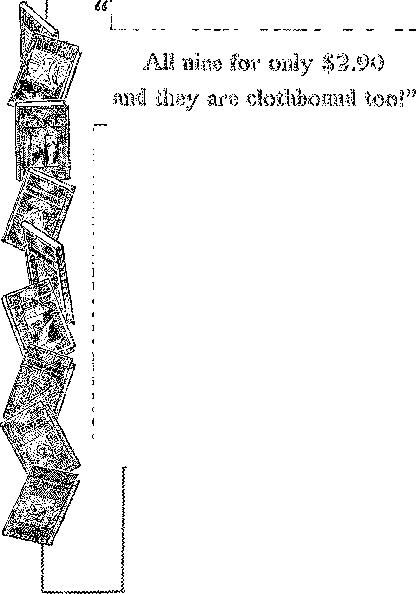

.............................................
A JOURNAL OF FACT ’ < 'D_ COURAGE
MwmmiwwmiiiiiiiiioiiHmmmmimsmwmmMffl
in this issue
ELECTRIC CURRENT COSTS
EVERY CHRISTIAN A PREACHER
SCOTCH MINERS NEED
GOD’S KINGDOM
MONEY
OBSTACLES TO JUSTICE
WOULD YOU' BE WILLING?
every other WEDNESDAY
five cents a copy one dollar a year Canada & Foreign 1.25
Vol. XII . No. 302
April 15, 1931
CONTENTS
LABOR AND ECONOMICS
New York’s 100 Bread Lines . . 457
Urge Old Age Pensions .... 457 Why Should Industry Be
. Subsidized? ....... 457
Burden of World Unemployment 459
The Income of 1929 ..... 459
Tavistock’s Humanitarian Plan . 478
Workmen’s Compensation in
New York. ....... 479
SOCIAL AND EDUCATIONAL
Gazing Out on the Sea .... 457
How We Have Grown Peaceful . 457
Sensible People Tired of War .
A Further Study in Nines . . .
MANUFACTURING AND MINING
Scotch Miners Need the Kingdom 464
FINANCE—COMMERCE—TRANSPORTATION
Costs of Electric Current . . . 451 Canada Rejoices in Savings . . . 456 Mr. Pinchot and the Power
Trust .........456
New Giant Cunarder . . . . 457 $75,.000,000.,000 Free of Taxes . . 458
Efforts to Improve Day Coaches 462
Looks like a Nice (?) Profit . . 463
Money .......... 466
Feeding the Interest Octopus . 478
POLITICAL—DOMESTIC AND FOREIGN . ?
Idaho Falls W’ill Be Taxless . , 458
Rewarding the Officers .... 459
World Court Part of League . . 460
Big Business and Muscle Shoals 460
Mother and Son on Prohibition . 468
Obstacles in the Path of Justice 469
AGRICULTURE AND HUSBANDRY
Would You Be Willing? .... 472
SCIENCE AND INVENTION
Mechanical Restaurants and
Bowling Alleys ...... 458
New Sextant Always Finds Sun 459
England’s New Bo-Railer . . . 461
Thermit for Ice Removal . . . 461
HOME AND HEALTH
No Cure for Influenza .... 459
More Bunk from the Health
Service ......... 460
TRAVEL AND MISCELLANY
No Autos in Bermuda . . . . 457
Terrorism in India.....461
The Electrical Transcriptions .
in Cleveland . . . . . .473
- RELIGION AND PHILOSOPHY
Heading for the Rocks .... 461
No More Presbyterian Chaplains . 461
45 Stewards, and Why ..... 471
Every Christian Must Be a
Preacher ........ 474
Happy with His Harp .... 473
Published every other Wednesday at 117 Adams Street, Brooklyn N. Y., U. S. A.s by WOODWOHTH, KNORR & MARTIN
Copartners and Proprietors Address: 111 Adams Street, Brooklyn, N. Y., U. S. A. CLAYTON J. WOODWORTH.. Editor ROBERT J. MARTIN.. Business Manager NATHAN H. KNORR.. Secretary and Treasurer
Five Cents a Copy—$1.00 a Year Make Remittances to THE GOLDE& age Notice to Subscribers: For your own safety, remit by postal or express money order. We do not. as a rule, send acknowledgment of a renewal or a new subscription. Renewal blank (carrying notice of expiration) is sent with the journal one month before the subscription expires. Change of address, when requested, may be expected to appear on address label within one month.
’Translations published in Finnish, German, Norwegian, Polish, and Swedish,, . . Offices in Other Countries
British............. . 34 Craven Terrace, London, W. 2, England
Canadian .. t ........ 40 Irwin Avenue, Toronto 5, Ontario, Canada Australasian.......7 Beresford Rd., Strathfield, N. S. W.. Australia
South Africa ...... ......0 Lelie Street, Cape Town, South Africa
^Entered as second-class matter at Brooklyn, X Y.s under the Act of March 3, 187&
Volume Xll Brooklyn, N. Y., Wednesday, April 15, 1931 Number 302
The Costs of Electric Current
[Compiled from the literature of The Public Ownership
IN 21 Ontario cities, each with a population of 10,000 and up, the cost of residence electricity per kilowatt hour is 1.6 cents. In 32 selected cities of the United States, with a total population of 25,000,000, the average cost of residence electricity per kilowatt hour is 7.4 cents. Even ■ when 30 percent is added to the Ontario rates to f ally cover payments of taxes, and dividends, and the difference between generation by coal and by water power, the rates in the United States cities are still more than three times the Ontario rates.
Some years ago Pasadena, California, undertook to own and operate its own municipal light and power plant. At the time the people began to talk about building an electric utility the rate for electrical energy was 15 cents per kilowatt hour, but a cut was made from this rate to 12*4 cents. This was being charged at the time the city entered the field and established a rate of 8 cents per kilowatt hour for domestic service and an 80-cent minimum instead of $1, with a top rate of 4 cents for power, ranging down to as low as 1.2 cents. This, it will be observed, was a little more than half what had boon charged before the city entered the field, and at the same time the service in those the service is today or since the city established its electric utility. .
The first year the municipal plant lost $5,463.71. The- next year they lost $12,525.63. The next year, however, they made a profit of $1,261.49 (that was the year 1908-9) and they have made a profit every year since. It went up to $8,000 the next year, then to $17,000 the next, to $18,000, to $23,000, and so on until in 1923-24 the surplus profit of that municipal plant was $297,223.33, with rates which, while not as low as they will be able to have them there, are away below what they ever dreamed of getting’ them when th>. ’ were subject to the control of a
League of America] privately owned plant generating and distributing for profit. They are paying something always toward the amortization of their investment, and eventually they will have it free of debt and have no expense but maintenance.
Cleveland, Ohio, has its own municipal electric plant. The plant has more than paid its way and today the city has an equity in it of over $2,000,000. Consistent with its original purposes it has rendered real service to the people of this city: It has saved the community at least $20,000,000 by reason of its low light and power rates to its own customers; and through the reduction of rates by the private company, which has consistently followed since the municipal plant started operation. As a result of its existence Cleveland enjoys the lowest domestic light rates in the United States, both through the municipal plant and the private company; and in addition, especially low streetlighting rates.
Tacoma, Washington, has muncipal ownership. Tacoma’s publicly owned light plant is saving her'citizens over $3,000,000 annually. If Tacoma raised its rates to meet the price charged in its neighboring city, Tacoma could cease to collect taxes and make the light department run the city. Some 2,700 homes use electric heat, many of them being without chimneys. Dirt is banished by the magic of "white coal”. Thousands of electric ranges are in use, and more are being added daily. The range goes on the lighting circuit, and practically all of the range current is at the 1-cent rate, which drops to one-half cent after using 800 kilowatt hours.
A distinguished public utility magnate is quoted in the press as declaring that public ownership is "wicked”. If that be true, Spring-451
field, the capital of Illinois, is an example of extreme and continuing wickedness.
In 1894 some public-spirited citizens qf that town got together and subscribed $60j&00 to build a plant for street lighting, to escape the extortion of the private corporation which then had a monopoly. The plant paid for itself in five years and then was donated to the city. This, from the corporation point of view, is appalling wickedness. It should have been capitalized at ‘‘reproduction cost” and unloaded on the community in that form.
For 21 years the plant continued lighting the streets. Then, in 1915, Willis J. Spaulding became manager and started in on commercial lighting and power distribution. By 1925 the city had secured 11,637 customers and had cut the rate for lights from 13 cents, per kilowatt hour to 6 cents. Obviously this is worse wickedness and more of it.
But that is not all. Instead of running behind, as publicly owned plants are supposed to do to suit corporation arithmetic, the public plant of Springfield is making money. It earned $115,000 above all charges in 1924, and $159,000 in 1925. This surplus, about $2 per year for each man, woman, and child in the city, belongs to the people instead of to a corporation. In addition, the plant saved the people $549,000 in 1925 through reduced rates. Samuel Insull would agree that this is unparalleled wickedness J
In other words, the people of Springfield are saving more out of their water and electric plants than their city government costs them. Words fail to describe such wickedness.
In the early years of the electric plant, a rather unusual incident occurred. For fear water works funds might be used to help the electric plant, the private utility company operating in Springfield sought and secured an injunction forbidding the use of water works funds for any other purpose; but still they were not satisfied! The company applied to and secured from the court an order under which the municipal light and power department was commanded to turn over all its books and accounts to expert accountants brought in by the company from outside the state, for the avo’wed purpose of proving that our accounts were not properly kept, and to show that the electric plant was not self-supporting; and that water funds were being diverted from their proper
use. When these bookkeepers completed their investigation, they found that the plant not only was paying its way, but was earning a profit. The auditors suddenly slipped away without making any report whatsoever, and have not _ been heard from since. ' ’
At Niagara Falls ■ -
Said Senator Norris: ' : :
There is a Niagara Falls, N. Y., and there is a : ■ Niagara Falls, Canada, just across the river. They are.....
supplied with electricity coming from Niagara Falls.
On the American side it is done by private initiative............
and the efficient methods of private ownership and : private distribution and private generation. On the Canadian side it is dope by the publicly owned hydroelectric commission. Here is the bill of a rivi who lives in Niagara Falls, N. Y. The bill is for the month'Z ZZZ ending January 2, 1929. That is not ancient. It is the ' last bill he has received. He lives in a 7-room house. ■■ ■ He has electric lighting, a vacuum sweeper, an electric iron, an electric washing machine, and an electric ~ ~ range. For the month of December, 1928, he consumed.-. 256 kilowatt hours of electricity. That is quite a large amount of electricity for a 7-room house. The ordinary consumption of electricity in a house of that size where they use electric lighting only would be between 40 and 45 kilowatt hours, but having all these electric appliances he consumed in that little modest home 256 kilowatt hours. He paid a bill for that amount of' p “' electricity of $6.44. As rates go in the UnitedtffiO®fiffi3 that is a cheap rate. But he had no discount on that bill. That was net. In fact, if he did not pay it within 10 days a 10 percent penalty was added. ......
Now let us see what that man would have had to pay for the same amount of electricity for the tame- - w v service if he had lived just across the line, in Niagara Falls, Canada. His bill then would have with a discount of 10 percent if lie paid it within 10 days, making a net bill of $2.96 on the Canadian side.... dZ as compared with the net bill of $6.4-1 on the American side for the same service, the power eomings-fSiC^^^^ the same water from the same river from the same Niagara Falls.
I have another bill from a man who Hvds:-:ihv^ZZS same city of Niagara Falls, N. Y. He J ives in an S-roorn .. house, and has electric lighting, a vacuum sweeper, an electric iron, an electric washing machine, and an / electric range. He consumed for the month of December, 1928, 493 kilowatt hours of electricity. He paid a bill of $9.64. That is net, with no discount. Had he lived across the river, in Niagara Falls, Canada, for the same electricity for the same month, generated from the same water from the same river, he ..would. . .--------
have had. to pay $5.77, with a discount of 10 percent if he made prompt payment, so that his net payment would have hem .$5.20; $5.20 on the Canadian side as against $9.64 on tlie Amerieaix side.
New York
Jamestown, New York, has two electric ligh.ti.ng systems, one within the city, owned by the city, operated with power generated from coal, and one with water power generated from ■Niagara Falls and supplied by a private syndicate. The charges of this latter company for electric service just outside the city limits are nearly Amble the rates charged by the municipal plant, although the private company is compelled as a result of the municipal competition to sell at the same low’ rates within the city, which rates, by the way, are the lowest in New York state.
Despite its low rates the municipal plant at Jamestown has been entirely paid for out of the revcmies. There has never been any tax levy for any purposes whatever in connection with the plant. Jf the city did not have competition and bed exclusive sale of current and sold the same nt the same rate at which the competing private company charges outside of the city, beyond municipal competition, there would be sufficient proiit to wipe out all taxes for city and school purposes. In other words, the people save enough as the result of present low rates, through municipal ownership, to pay these ifS3S|i|y iii t i '
The Jamestown municipal plant not only reduced rates to the lowest in the state of New York, but it lias paid for itself out of earnings, accumulated a sufficient surplus each year to pay for extensions and improvements, and is at the proscat moment adding new equipment that is doubling the capacity of the plant. And it has all been paid for out of the earnings at rates so-low that the private power.companies that are competing with the plant have been compelled to resort to the most desperate measures in trying to protect themselves from the extremely low rates macle possible by the success sliiiiiSitIie«luunicipal plant. The saving to the people in low rates exceeds $5,000,000 during the last
Some lime ago the private company that operates in Jamestown tried to persuade the :siiii“’S:l:teitylmfli.cials to enter into a contract by the ®»;'S’»stprms of which the private company offered to furnish lighting for street purposes at a lower rate than now supplied by the city, but with the stipulation that the city hind itself not to make any further enlargement in the capacity of the municipal plant. There were many citizens and some members of the city council who were captivated by this alluring proposition and urged its acceptance on the part of the city. But the friends of the municipal ownership, however, were able to discern the scheme back of this proposition, which meant in reality crippling municipal service and placing the city7 eventually at the mercy of the private company. One of the leading newspapers of the city advocated this scheme, and there has been a continuous effort to mold public sentiment against the public plant.
So successful, however, has been the management of the municipal plant that those in control decided upon a considerable reduction in rates, and then a strange thing happened. The private power company7 that has been in competition with the municipal plant filed a petition 'with the utility commission of the state, insisting that the municipal plant must raise its rates.
There you have it: the private company in competition with the municipal company went before the commission and filed a petition demanding that the municipal plant be compelled to increase its rates.
This is such an astonishing procedure that it led the Jamestown Journal, in a long editorial, to declare that this is—
Probably one of the most, unique and unusual proceedings that has ever claimed the attention of the Public Service Commission of New York. It is a proceeding to compel a corporation (municipality) to raise electric light rates.
The editorial then goes on to state:
The proceeding is brought by the Niagara. Power Co. against the city of Jamestown. The Niagara company contends that the rates are below cost, hence impose an unlawful burden on the taxpayers, of which this company is one, and incidentally, makes competition impossible without being confiscatory of its property.
On the specific question, however, as to whether the reduced rates proposed by the municipal plant are sufficient to meet all costs of operation, maintenance, capital charges, sinking fund, etc., the representatives of the city contend that in spite of the lower rates in effect during 1927 the plant earned a net profit of $162,336.43.
Of course the larger a city is- the greater the advantage in the production of electric power, and, therefore, the more money it can make on a municipal plant, and the lower rates it can offer. And yet even the smallest towns and villages have found great advantages in owning their own plants. Here are a few7 striking examples. ’
Kimballton, Iowa, a little village of only 382 population, owns a Diesel engine plant. It has paid for it out of earnings, is saving $302 a month, has $3,000 in the light fund, and is installing another unit.
Alma, Nebr., (population 1,000) has a little municipal light plant that the private companies have tried desperately to buy, but the people voted 410 to 14 not to sell. The town is earning $12,000 a year profit with rates lower than those in surrounding communities.
Walnut, Iowa, (population 1,072) started a municipal plant in 1925 and found that it could produce current at the switchboard for less than 2 cents a kilowatt hour, which was much cheaper than it could buy it from a private “high line” company. And, besides, the plant paid for itself in three years. '
Maquoketa, Iowa, a city of 3,600 population, because of its municipal light and power plant has a 7-cent maximum rate scaling down to as low as 2 cents, whereas in 22 other cities in that section of the state the maximum rate charged by private companies is from 14 to 18 cents per kilowatt hour.
Garland, Texas, (population 1,421) reduced its rates 10 percent at its municipal plant and still made enough profit that it was able to reduce taxes 40 cents on the $100 of valuation.
Muscatine, Iowa, has made so much more than had been anticipated by its new plant that a new unit costing $70,000 was purchased out of the surplus earnings early in 1927, thus making it unnecessary'to use the $100,000 bonds that had been issued.
The city of Winnetka, Illinois, (population 6,694) has recently built a beautiful and rather pretentious city hall out of the money it has earned on its municipal light plant. Logansport, Indiana, (population 21,626) has built a fire barn out of its light plant earnings. The municipal light plant at Jacksonville, Florida, has transferred out of net earnings, to the general city fund, a total of $3,547,720.99 during the eleven years ending 1925. This has been sufficient to reduce the tax rate in the city 5.2 mills. Independence, Iowa, (population 3,672) has $68,000 in the city treasury and not a single cent of bonded indebtedness, due largely to the fact that the earnings of its municipal light and. power plant have enabled it to make all public improvements in recent years without incurring any public debt. Cedar Falls, Iowa, (population 6,316) rebated all electric light bills to its pa-bi trons in October, 1926, amounting to approximately $8,500, giving as the reason that all of its bonded indebtedness had been paid off and a cash surplus of $48,021.32 was on hand in the, city treasury, practically all of which was the result of the operation of thffir municipally owned light and power plant. Other instances almost without number could be cited.
Since 1893 Higginsville, Mo., has twice rebuilt its municipal plant to keep it up to date-in efficient and economical equipment It has refused to buy current wholesale, voting bonds instead to improve and extend its plant. It has retired city administrations not favorable to municipal ownership and elected men who could not be bought, bribed, bulldozed or bludgeoned into betraying the people and selling the plant. It completely rehabilitated its plant in 1925 equipped with Fairbanks-Morse Diesel engines. It has paid for this equipment entirely out of the surplus earnings of the plant in 4'/^ years without costing the taxpayers a single eent. It has refused an offer of $150,000, later raised to $235,000, by the Power Company in 1929-and is now planning further extensions and enlargement of its part. It has twice reduced rates approximately 20 percent each time, and yet is making a total net profit of $35,500 a year. It has reduced the cost of producing current from 1.48 cents in 1926 to .86 of a cent in 1929, and now owns a property in its plants valued at $350,000.
Ponca City, Oklahoma, built its own plant, and instead of trying to see how much it could cut its rates it kept the rates up to the usual level charged by private companies and used the profits to operate the city. Tlte mayor of Ponca City says: . .............
For the year ending June 30, 1928, the municipal water and light department yielded a net income from operations of 20.81 percent interest on its investment, and after deducting interest paid on meter deposits, interest paid on the outstanding bonds, together with the necessary depreciation and sinking ./'fund requirement for outstanding bonds, it then yielded a net profit of 16.14 percent on its investment, roc the last six months of 1928 the municipal utilities yielded a net income from operations of 21.82 percent and a net profit of 17.36 percent on its investment.
gx'..This profiteering by the city in behalf of its citizens doesn't hurt the feelings of the citizens, especially ■•■hen they1 are not confronted with taxes to support the police department, street cleaning and garbage incinerator departments, public library, fire depa rt-meiu, park department, etc. To have well cleaned streets, parks beautified, properly maintained garbage and refuse collections with free, prompt and efficient service, streets brightly illuminated, up-to-date traffic signals, and finely-trained, well-disciplined police and fire departments, all without taxation, seems almost too good to be true.
Ponca City people pay county, state and school taxes, of course, but none for the operation of their local municipal government. There is also a sinking fund rax of 9.63 mills which is required by the state law. But none of the money derived from this fund eoes to pay local government expenses. Moreover the revenues of the water and light department are sufficient to pay interest and sinking fund requirements in addition to the local government expenses, so that Ponca City may be very truly said to be “A Tax-Free Town”.
The records of the city clerk, C. E. Norton, who has served the city efficiently for many years, disclose that $611,187.00 of the profits from the municipal light and water department has in five years been diverted, to maintaining other operating expenses of the city.
are but a few examples of literally hundreds that might be cited showing the success of municipal plants in smaller cities. With modern equipment, machinery and methods, which arc now easily available to any community, even the smallest city can have a municipal plant and make a success of it, no matter what the conditions are or the limitations.
Coming now to some of the larger cities, here are some of the really amazing , reductions of rates that have been secured by municipally owned plants.
A FEW STRIKING EXAMPLES OF REDUCED RATES
RESULTING FROM MUNICIPAL OWNERSHIP
|
Before Municipal Ownership Per k. w. h. |
After Municipal Ownership Pei’ k. w. Ii. | |
|
Cleveland, Ohio................... |
........... 15c |
3c |
|
Seattle, Wash.......................... |
........... 20 |
4 |
|
Springfield, Ill....................... |
........... 11 |
6 |
|
Winnipeg, Man., Can.. |
........... 20 |
3 • |
|
London, Ont., Can.......... |
.......... 9 |
iy2 |
|
Pasadena, Calif.................... |
........... 15 |
5 |
|
Jamestown, N. Y............... |
5 | |
|
Ottawa, Ont., Can............ |
........... 7 |
1 |
|
Lincoln, Nebr.......................... |
.........» 12 |
5 |
|
Toronto, Ont., Can............ |
....... 8 |
1.7 |
You will notice that Cleveland, Ohio, has a maximum or retail rate of 3 cents a kilowatt. No private company has ever given or attempted to give such rates. Seattle has a 4-cent maximum rate, which is extremely low. But Tacoma, Wash., has probably the lowest rates of all. The maximum is <ty2 cents per kilowatt hour, but it scales down to as low as y> a cent for cooking, heating and other domestic uses, which is the lowest rate on the continent for that class of service.
As a result of these reductions of rates these cities have effected enormous annual savings as follows:
Los Angeles ............ $3,790,067 per year
Tacoma .............................. 3,014,000
Chicago .................................. 2,774,846 “
Cleveland ................................. 1,085,209 “
Seattle ..................................... 1,000,000 “
Jacksonville, Fla................... 600,000 “
Winnipeg.................................... 400,000 “
Pasadena ........................... 161,953
Springfield, Ill......______............. 109,976 “
Across the Niagara River at Niagara Falls is the International Bridge. The lighting of the Canadian half comes from the Canadian Government power plant. The lighting of the American half comes from a private American power plant. It is said to cost $4.10 per hundred watts installed per year to light the Canadian half. It is said to cost $12.31 per hundred watts installed per year to light the American half. The same bridge, the same river. Three times as much to light the American half as the Canadian half.
There is another interesting observation at -Oagara Falls, Canada. A few hundred yards from the Canadian Government’s plant is the plant of a privately owned Canadian power utility. Both plants are on the Canadian side of the river. The Canadian Government plant sends its electricity to Windsor, 238 miles away, and sells it at a price of 1.6 cents. This private Canadian utility sends its electricity to Buffalo, N. Y., 28 miles away, and sells it at good American prices, 6 cents or 7 cents. The sam^ river, the same falls, the same power and plants within a few hundred yards of each other, on the same side of the river, shipping the same electricity, costing three or four times as much in an American city as it costs in a Canadian city ten times as far away.
What is the real reason for the Canadian Government’s ability to sell electricity at low prices ?
Guy Tripp, former chairman of the board of the Westinghouse Co., was authority for the statement that 80 percent of the cost of producing electricity from water power is fixed charges. Mr. Gano Dunn, from a result of his compilations, says that 77.4 percent of the cost of producing electricity by water power is fixed charges. -
Fixed charges mean principally dividends on stock and interest on bonds (and normally depreciation, and perhaps some other elements, according to some methods of accounting, but the main factors in fixed charges are the capital charges, dividends on stock, and interest on bonds).
Now, that is not true of any other business. In the ordinary manufacturing business the elements which go to make, up the cost are principally labor and material. In the mining business it is practically all labor and transportation. Go into an ordinary manufacturing plant and you will find swarms of workingmen and piles of material. Go into a power plant and you will find nothing sitting there but an investment.
When you get rid of your original investment you then get rid of these fixed capital charges which are the principal item in the cost of water power. If you retire your original investment down to only one-half you have still cut down your capital charges by one-half and are able to cut your rate accordingly. '
'And that is exactly wh'at the Canadian system is doing. The provincial government system, which is the producing system, is financed QU A;..........
debenture issue covering 40 years in some eases and 30 years in others. The local distributing systems are financed normally on a 20-year debenture basis, and part of that bond issue is retired annually. Indeed, 70 .cities have- canidj pletely retired their original investment and are absolutely debt free. They have no capital charges.
Incidentally, it may be added that in the early years when the Government water-pbwbf A system was new, the cities came in by a VotAcfr" their citizens of only 2 to 1, hometimes'Ajbltflf: majority; but today they are coming in by votes:-:-of as high as 14 to 1, and in some placesthyy'y unanimous vote. )
Canada Rejoices in Savings :........
CANADA is rejoicing in the fact that::.fhe: great publicly-owned electric power system has saved the citizens of Ontario "$425,000,000 since its inception. But just think of the fact that here in America the Power Trust claims to be worth $9,000,000,000, and to have gotten it all from the people. What a melon the Ontario power system would make if there were only some way that these purchasers of statBsSK college professors and newspapers 'eptffil®® hold of it.
Mr. Pinchot and the PowerTrust "''7
Gifford Pixchot, governor of Pennsylvania, is enough of a business man and enough of a statesman to see that in these times it is all wrong for the Power Trust to go on making 100, 200, 1,000, and, in one case uncovered by the Federal Trade Commission, more than|3|G 000 percent a year on the money actually invested. He says, very truly, “In no case should the rate ever exceed five cents, and probably often it should be much less.” He points out that Oregon is controlled by the Portland Electric Light Company, one of the Morgan interests. Indeed, so says Mr. Pinchot, “the firm of J. P. Morgan & Co.- in New York has so many affiliated electric interests that it controls/ I am informed, more than half the electricity produced in America.”
Gassing Out on the Sea
G hables A. Gill, a B. & 0. railway official, will spend a year in Russia, putting Russian railways on an efficiency basis. He will have 150 American railway men to assist him.
IT IS still expensive to fly around in the skies, instead of traveling in some one of the less spectacular ways here on earth. The army has figured that, not counting the pay of the officer pilot, it costs from $48.08 to $268.47 to fly an army plane, for every hour the plane is flown.
’P KFE-RRTNG to conditions in New York city
Rabbi Stephen S. Wise recently said: “No shame is greater than the 100 bread lines in New York, and that only two years after vulgar boasting throughout the country, from the White House down, of our great prosperity.”
ORK has been begun at Clydebank, Scot-V ¥' land, on the Cunard Company’s great new $25,000,000 liner, which will be much the largest vessel on the seas. The tonnage will be 78,000; the length. 1,018 feet. She will carry 4,000 passengers and have a crew of 1,200.
BERMUDA’S legislative council has decided, by a vote of 5 to 2, that there shall be no automobiles in Bermuda, not even for physicians. The doctors, the council thought, would be sure to run over somebody, or scare somebody to death, and, anyway, they would be late arriving, if they had to come by horse and buggy, and in the meantime the patient might recover; so, all around, the autos were forbidden.
TTTITHIN the past year fourteen American ’ V governors have urged old age pensions.
Governor Adams, of Colorado, says: “If the old age pension be socialistic, then our present system of caring for the poor is also socialistic, and there can be no impropriety of improving that rvhich we have operated for centuries. No one will contend that our present system of caring for the poor and aged does not stand sorely in need of improvement.”
A LTHOUGH the times are hard there seems to be no diminution in theater attendance.
Of the 62,235 theaters in the world, 22,731, or more than a third, are located in the United States. More than 1,800 of these latter "were built during last year.
OFFERED $200,000 for a five-week contract in the movies, Albert Einstein staggered Hollywood by telling the movie magnates that he could not spare even a moment from his present work of studying the speed of light. It is good to know that there are some things in this world that money cannot buy.
IN 1885 the appropriations for all the activities of the United States government amounted to $306,000,000. That is less than the appropriation for the United States army alone for 1931, and it is also less than the appropriation for the navy. Army and navy appropriations are now about ten times what they were forty years ago.
REFERRING to a common view that industry should be privileged at any time to throw its workers on the Red Cross or on public charity until again needed, Professor Leiser-son, of Antioch College, recently made the statement that this really amounts to subsidizing industry, and is the most pernicious of all doles, a dole to industry itself. Professor Leiser-son believes in unemployment insurance, paid out of funds built up by employers and employees, and supervised by the state.
THE Kansas City Freemason is stirred up because a public service corporation makes a habit of turning off the gas from delinquent debtors and refusing to turn it on again until the delinquency has been paid and an additional sum deposited to guarantee against a recurrence. It is the demanding of this additional sum, at a time like this, that will gradually make the common people, who are the sufferers, appreciate what a great blessing the private ownership of public utilities really isx not.
25 Percent Had No Shoes
ON OCCASION of a visit to the Mount Pleasant School, Merthyr, Wales, 63 of the girls, or 25 percent of those on the rolls, remained away because they had no shoes wherewith to come to school in midwinter. Merthyr has 170 families living in cellars, and her citizens are occupying 900 houses that were long ago condemned as unfit for human habitation.
Cities of Wives and Children
AMERICA is becoming filled with cities of wives and children. The local industries have died, having been swallowed up either by Big Business or by general stagnation. The men have gone elsewhere looking for work, and leave their wives and children behind them, where they can live more economically in their own homes.
Idaho Falls Will Be Taxless
IN ANOTHER year or two Idaho Falls will be taxless. It would be so now except that it has just built a new city hall, and paid for it in cash, in two years. Of course you know’ the reason. The reason is that the city owns its owm municipal light and power plant. The city is about to build a new7 power plant, 87 miles from town.
Big Business Going Bolshevik
BIG BUSINESS is now talking of repealing all anti-trust legislation and organizing a super-trust which will coordinate all industry. This is exactly wThat has been done in Russia. In Russia the super-trust is run by Stalin; in the United States the trust ■would be run by Morgan. In the end both trusts -will be run by the Lord and the people will have relief.
$75,000,000,009 Free of Taxes
IN 1925 the National Conference Board estimated that there was at least $55,000,000,000 of property in the United States exempt from taxation, both as to principal and as to income. It is claimed that this amount, with governmental securities included, today approaches $75,000,000,000. It is the man with visible property who pays all the taxes. The bondholders are expressly excepted from the burdens which rest upon those less fortunate or less wealthy.
Naseby’s Hundred-Year-Old Soprano ;
NASEBY, England, has, in Mrs. Patience _
Done, a soprano soloist now nearly 100 years of age, who has-been singing for the public for more than seventy years. It is said that her voice still retains considers hie of the quality which made her a singer of note two goner-ations ago. ■ ■
Watt Street Forecasts 100% Wrong T
IN Commerce and Finance Preston S. Krccker __ says significantly: “Nineteen-thirty was a % year of disappointment and disillusionment in Wall Street. Rarely have financial soothsayers . been as unanimously mistaken in fore-easting events as they were a year ago. Nothing forecast by them came true. They were 100% wrong/3 It remains to add only that it is to these financial doctors that American newspapers and politicians look for guidance and inspiration. Every- r thing in Satan’s kingdom is upside down and spinning on its ear. >
Mechanical Restaurants and Bowling Alleys.......r /k
THERE is a restaurant in New York where the food is cooked, dished up and servvd by machinery, and it is expected that in a few months other devices will clear the plates away and clean them up. In Boston, and perhaps in many other places, are mechanically operated bowling alleys, which pick up the ten pins and. arrange them perfectly, exactly where they belong, without the intervention of a human hand. And so gradually pass the ec»ok, the waiter, and the boy who makes a living settifigiUS up tenpins in a bowling alley. ■ ..><>
Two Percent Could Do It ■
Professor Albert Einstein is of the opinion that if but two percent of the population of ■ the world should assert in time of peace that they would not engage in war, the problem of war would be solved, as there would not be jails ■ enough in the world to accommodate so great a number. There is a great deal of truth in the suggestion. History has proven over and over again that one man with a backbone and a conscience is more than a match for’ forty-nine persons in pants who can be shoved about this way or that as their masters for the moment think advisable-. / • < ■ ; />■
A T LIGONIER, Pa., a child a year and a half old went to sleep under a steam shovel, during the noon hour. A dog discovered her predicament and went iii beside her. For an hour he barked and growled but refused to come out, and meantime held up the operation of the shovel. At length the child was found, and it was discerned that the shepherd dog had saved her life.
A ^EDITORIAL in The Army Quarterly of ....._ ^^jtLbndon says: “Today the whole civilized world, the more sensible portion of it at any rate, is tired of war, and its futility as a method of settling international disputes is apparent.” 'When even the militarists themselves are willing to make an admission like this, it is a pretty good sign that the toes of Nebuchadnezzar’s “Image ’ are breaking up.
WG. Campbell, chief of the food and drug
• administration of the department of agriculture, has made the official statement that ••'according to medical authorities, there is no known, drug or combination of drugs, nor any food, whi'.h will prevent or cure influenza”. Perhaps he did not mean to do it, but at one swoop Mr. Campbell has taken all influenza cases ent of the hands of the medical profession and put them into the hands of the osteopaths and chiropractors; and, after all, that is just where thc-v belong.
TIIE: Tyson act, passed at the behest of the
American Legion, puts 6,600 temporary World War officers on the payroll at $125 to $280 a momh for the rest of tltfeir lives. One officer on the list never saw an actual day’s service. He was called after the armistice. Fifteen hundred are medical officers who never saw any kind of service except a week or two at camp. Two chaplains each draw $125 a month; one of these was called into the service November 1, 1918, and the other on November 6, 1918. The average compensation to disabled, privates who were really in the war is $44 a month. Dan Morgan, who wrote “When the World Went Mad” for The Golden ’Aye, receives not a cent.
A NEW sextant, the invention of a Hun-tington (N. Y.) architect and engineer, enables the instant finding of the sun at any time it is above the horizon, no matter how thick may be the intervening fog. The new invention has been tried out on the Mauretania, and the captain of the vessel says it will revolutionize navigation. Eight years have been spent in perfecting the invention.
"D EFERRING to the burden of world un--*-* employment, Herman Dietrich, German minister of finance, recently said: “Economic systems of other days have decayed and disappeared when they became unable to solve their own problems. The burden of unemployment is so staggering that theories must be put aside and courage found to devise new ways of meeting the problem. When millions stand on the brink of despair, positive measures are everything and beautiful theories nothing.”
AVEDON’S, Fifth Avenue, Neiv York, did a business of $2,000,000 in 1925. Since then the sheriff has got the business, because, says Mr. Avedon, “we are fast becoming a nation of capitalists and laborers. All our wealth and buying power are concentrated in these two classes. The large, educated, tender-footed, white-collar middle class that would rather push a pen than a spade have barely enough for the necessities of life. Any store catering chiefly to this class must of necessity suffer with them.”
THE statisticians are trying to figure out what became of the national income of 1929, which is estimated to have been $90,000,000,000. It is admitted that the annual income of all workers exclusive of agriculture and those in Federal employ was less than half that sum, and that agriculture and the Federal employees could not have received more than $12,000,000,-000. The balance, which went to somebody who 'did not earn it, is about $33,000,000,000. Who got it? The answer is that it went into interest and dividends; and if anybody thinks a civilization can survive'Which spends over a third of its income in payment of interest, such person . needs the attention, of a trained alienist at once.
$49,000 to Break into Society
IT IS said to cost $40,000 for a coming-out party of one of New York’s debutantes, and there are about 200 of these parties a season. This makes a nice little total of about $8,000,000 a year just to get these 200 rich young women nicely started upon the expensive road of social preferment. Incidentally it helps to show what becomes of some of the millions that do not go to care for the necessities and comforts of the unemployed. But it is better that this money should be expended for food, flowers, music anti folderols than that it should not be spent at all.
World Court a Part of the League
IN A NATION-WIDE hook-up over the Columbia Broadcasting System, Senator Johnson of California recently said:
It is an amazing intellectual stultification to assert that the so-called “World Court” is not a part of the League of Nations. The League of Nations was begotten by the Versailles treaty. The League appointed a committee of experts to draft a scheme for the organization of the Court. The secretary-general of the League pointed out that the Court was to be the “most essential part of the League of Nations”. The French representative described the two institutions as complementary to each other. The official spokesman of the committee stated, “The new court being the judicial organ of the League of Nations can only be created within this League. The Court was intended to be, and is, the judicial tribunal of the League.”
More Bunk from the Health Service
ON J ANU ABY 9 the United States Public
Health Service officially admitted that after a year and a month of strenuous search it had been unable to find any of the germs supposed to be responsible for psittacosis disease. One hundred and sixty-nine persons are supposed to have contracted this imaginary disease from contact with birds imported in November and December, 1929, and thirty-three of them are supposed to have died. Now if those germs that were so well known a year ago will just come around and confess their wrongdoings, all the expense connected with this year of fruitless investigation and this useless waste of postage and paper by the Health Service will be forgiven. And, anyway, maybe if there is no such disease, then nobody was sick; and if nobody was sick there is nobody dead. Under the circumstances it looks as if the Health Service ■was the only one in need of attention.
Those Unhappy 26 Multimillionaires ..... v
ONE percent of the net income of the people of the United States is in the hands of 26 persons. Their total annual income is $253,000,- -000, or in the neighborhood of $10,000,000 a year apiece. These people arc intolerably burdened; they cannot even begin to think of spending their money; they need the help of u new and just arrangement, and it is on the way.-GhOtlEW kingdom will take away their unhappiness and the unhappiness of the millions who now do not know where the next meal is coming from.
Big Business and Muscle Shoals
HPHE United States Chamber of Commerce
-®- has been taking a straw vote as to whether--—-or not the people should operate their own power plant at Muscle Shoals, and finds that Big -Business is against government operation by a vote of 2,660 to 158. One wonders why the 158 stood out for the people. As to the 2,660, they set themselves on record as taking the position that .... among their entire number there could he found none who would be willing to honestly operate this plant in the interests of the whole people.
They would operate the plant for the Power ..... j
Trust, certainly, but for the people, certainly not. The desire of Big Business to impress upon the people that it is not now, never has been and never will be really patriotic is touching.
Waukegan Ministers on Warpath ■
TT SEEMS that Waukegan, Ill., is" a;;faypri;ttj;;:tj J- place for runaway couples to get masrkd, and though the state fee is $2 the elope|s:S|:;;j:v ways hand over $5. The custom has beehlfb|lSh::";;f:; marrying parsons and justices of the give $2 to each cab driver who brings some: - ? business. One of the justices raised the ante 50c, splitting fifty-fifty with the cabteCffiff™! there has been one of those imposing,, solemn,";:";;; ministerial conferences, about 'certain practices tending to lower the solemnization of marriage1, etc., etc., but Justice 'Wright, who has been get- - . ting the bulk of the business, asks: “Why be a"'"''"'"" hypocrite? The rest of them have been splitting with the cab drivers. It is business. I give the taxi driver $2.50 as his share. The rest of them would kick in with only $2. So the drivers..............
brought me the trade. That’s why they’re sore.” Now everybody is laughing at the solemn ministerial association.
DO .YOU know what a ro-railer is? ............... new vehicle which is so designed
It is a that it
can run either on rails or on paved streets. It can run a few miles on a pavement, then run several hundred miles on rails, and complete the ■journey on a pavement at the other end. Such a vehicle has been invented in England, and it works all right. When traveling on the rails the iSflhtreet wheels are raised out of the way by an eccentric device.
XTOT being able to get any serum to inject into girl’s blood, her physicians tele-to Chicago for advice and were told to the parents’ blood. The message was misunderstood. A parrot instead of a parent was mnput out of business and its blood was injected into the poor girl. Oddly enough the child improved, not because of the injection, but in spite of it. Now watch the price of parrots go up, and listen to the bleat of the putative press as it heralds forth to the world the great new __ discovery that fresh parrot’s blood is a sure cure for whatever it cures. As for the doctors, they are in favor of anything at all, just so long as it is a serum of some kind. They have proved that to us all. "
UpHE finance committee of Rose Hill Baptist Hi|8®L®hnrch, Columbus, Ga., are out with a postal card appeal upon which, in large type, lUwpSiffhe declaration “We Are Heading for the
Rocks”. The card goes on to say that the church is behind in its budget for October, November, Docosuber and January, and that unless something happens soon the jig will be up. There will IllIiBbimore such appeals before there are fewer. iirsrSlAhe<mcclesiastical institutions that are built ~ on the idea that an infinitely loving God is running a purgatory or blazing hell as an annex gggS^s?wilIisha.ye’:'to go. The times are hard, and the
people, Bavuii; already all the burdens they can hear, can get along without any of that kind of Su"cpmfortfi. The congregation will no doubt now
listen to die m-kly address of Judge Rutherford over the local radio station, provide themselves with his books, and get real comfort out of them while the '"'ship” pounds to pieces on the rocks.
TpORTY dollars’ worth of thermit, a eombina--®- tion of oxygen, iron and aluminum powder, will annihilate an iceberg. Lowered into a holo :""in the ice, and touched off -with a fuse, it produces a temperature of 5,000 degrees, and shoots streams of molten steel through the ice in all directions. Huge holes are torn in the ice, flames leap a hundred feet in the air, and the effect of the light generated is as disastrous on the ice as the heat itself. Other chemicals are also being used successfully for the same purpose.
IN CASE of another war there will be no more
Presbyterian chaplains; at least that,is the present .attitude of all chaplains of that persuasion that served during the World War. One of these ex-chaplains, Rev. Dr. Samuel McCrea Cavert, general secretary of the Federal Council of Churches, one of the spokesmen of the new movement, said: “I am disillusioned as to the results of the war. Today I see a world in which more money is being spent for armaments than at any other period in human history, and that, too, at a time of acute financial depression when millions of men are on the verge of starvation. I am disillusioned as to the relation of the church to war. Today I am convinced that the church must disentangle itself from the business of war.”
IF THE British lose India it will be because of the unexampled cruelties inflicted on the Hindu people by the British police. That seems to be the sense of an article in the Manchester Guardian from the pen of H. N. Brailsford, of New York. Mr. Brailsford reports that after some college students at Calcutta had shouted "Cowards!” at police who were beating participants in a peaceful procession, an English officer, accompanied by a squad of police, entered the classrooms and beat the students indiscriminately until the walls were spattered with blood. A similar scene took place at Lahore, where the teacher also was beaten. At Meerut a leading lawyer was the chief speaker at a dispersed meeting. While under arrest he was beaten, and while in this position was shot at close range by a policeman, so that his aim had to be amputated.
Efforts to Improve Day Coaches
STUNG into action by the rapid rise of motorcoach travel, and. falling passenger receipts, the railroads are doing what is humanly possible to regain some of their Jost patronage. Day coaches which have made little progress in fifty years are now being improved, and rates are coming down, the rate of 2c a mile being again in vogue on many of the roads running out of Chicago.
The Chesapeake & Ohio has put in operation a line of coaches which it claims is the greatest step forward in luxury, comfort and privacy of railway travel since the perfection of the sleeping car. These cars are open to all first-class passengers without any extra charges whatever.
The new cars are like the dining cars. They have two seats on one side of the aisle and one seat on the other. This allows plenty of room to revolve the seats; and all of them revolve, the double ones in pairs. The seats have double cushions.
Other attractions are extra large baggage ' racks, individual wall lamps, thermostatic heat control, concealed radiators, full-sized copper screens, electric fans, bright lights and dimmers, porcelain dental lavatories, and the little tables which are such a comfort in a Pullman car. In short, the new Chesapeake & Ohio day coaches have all the essential comforts of a first-class chair car.
Mooney Still in Prison ■
HDom Mooney is still in prison. This is by the recommendation of the majority of the Supreme Court of the state of California. To his everlasting credit, however, there was one justice on the California bench, William H. Langdon, who dared to disagree. Mr. Langdon said: “Considered either as an argument of an advocate or as a judicial review7 of the evidence, the consolidated majority report is unsound and indefensible. It is unsound because its conclusions are not founded upon established facts. Suspicious conjectures, unwarranted inferences, irreconcilable inconsistencies and admitted prejudices are treated as facts. It is indefensible because it appeals to passion and prejudice.” Besides the foregoing we have the facts that the judge v7ho tried Mooney says that he w7as unfairly, even criminally convicted; that the ten living Mooney jurors have pleaded for his freedom; that the detective captain wb.-. helped convict him says he did not have a fair trial, and that the sanctity of the courts has been violated. Mooney has discovered that in the fifteen years in which lie has been languishing in prison not only have the leaders of organized labor, both in the headquarters of the American Federation of Labor at Washington and in San Francisco and California in general, been cold and indifferent, but some of ihern have actually worked with Mooney’s enemies to make sure that nothing effective shall be done for him.
Program Sold the Set ..........J
rpHE following clipping from the Belleville
(N. J.)' Neu's shows that the people therein called “Holy Rollers’’ (but probably Amish or Dunkards) have the good sense to know the “Si difference between a low-class program, such commonly goes out from most of the radio stations, and the high-class programs put out by Judge Rutherford and his friends. At any rate, they were sufficiently7 impressed by Judge Rutherford’s lecture to purchase a radio receiv- ’ ing set which otherwise might not have been placed. : :
A clever story7 is told by a local radio service man. now connected with one of Newark’s department _: stores. When he was traveling and installing radios, he was asked to go to a town in Pennsylvania near York. Not knowing the locality, he was surprised when he reached the hall to find a queer sect there, called the Holy7 Rollers, awaiting his appearance vith th radio. ■■■■■<■
The women were dressed in black with dresses to' " J-their heels, high necks finished with a bit of lace and braids of hair down their backs. The men also wore black, long trousers and a queer kind of hat. lie installed the radio, and not having a program with him. tuned in on “jazz”. Well, ’twas a near riot, as these.........
people do not allow “jazz” or anything irreligious. One man was going to break the radio. Not feeling so happy, Mr. Radio Service Man then tried out another station and happened to get Judge Rather-ford in one of his lectures. There was a dead silence for a few minutes, then a delegation asked the price. It was considerably7 over $200, but they wont into conference in another room, called him in, and paid in. cold cash. He drove back over forty miles to the radio store and asked for particulars in regard to sending him. there, finding out that the local7 m®' diegiisabpitJhe ‘ ‘ job ’ ’» : t■ : ,|||||||||||||;||^^^^
BOSTON lawyer lias everybody laughing at rhe Harvard Economic Society. He has gathered together their prophetic bulletins issued during the past two years. Everything that they prophesied went wrong. What they said would happen did not happen, and what they said would not happen did happen. One of their most hopeful bulletins was issued just before the greatest stock crash of history. Everything was going to get better in the spring; and it got worse. Prices were supposed to be at the bottom; but they kept right on going si-dowus--Prophesying is risky business.
ON THE second Sunday in each month hereafter, at a given point on 47th St., New York, a bone of St. Christopher, or some other hone, recently received from Vatican city, will he field above a priest’s head, and turned west, oast and touth (but not totvard the north) and I'oiy v ator will be sprinkled over the crowd and in the direction of a bunch of parked automobiles. It is known that traffic conditions in New York are very bad, and it is now expected that they will get very much worse. It will take a brave man to ride in one of those blessed automobiles, or to cross a street ahead of one.
SUBSCRIBER in British Columbia noticed in his newspaper, The Daily Province, that the quotation on No. 1 hard wheat was 53-7/8c, and on No. 6 wheat, 38-7/8c per bushel of 56 pounds. Tie then wrote to a gentleman who is in the feed business in Vancouver, rated as one of the city’s leading millionaires, and got the following answer (quoted exactly). Our subscriber asks, “What workman could not he prosperous if able to get such interest on his e> u-gy?” ,
reply to your letter of recent date our Feed Dept. inform us the price prevailing at the date of writing on Barley, is $1.50 per 100 lb. sack; on No. 1 hard wheat $3.00 per 100 lb. sack; and on No. 6 wheat. $1.60 per 100 lb. sack, Owing to market fluctuations. however, these prices are subject to change without notice. We might mention that we do not sell merchandise ar. wholesale prices, our business being retail trade only, (the above prices being quoted as such). Delivery charges on barley and wheat would be additional.
Eating Twice as Much Green Food rpiIE billboards carry posters urging the people to eat more bread, so as to help the millers and the farmers. But it is all to no avail. In the last seven years the consumption of green food has doubled in the United States; the people are better already, and they know it, and know why, and no effort of the millers can put them back on the diet they have abandoned. The farmers may as well face the facts. Wheat is a good food, but it will not be eaten in the future to the extent that it has been in the past. Fresh fruits and vegetables have in large measure taken its place, and the change is permanent.
WRITER in the Manchester Guardian sums it up well when he says that for years the tendency has been for America to become the land of a hundred thousand very rich people and a hundred million poor, that the Wall Street crash has cleaned out the middle class, most of whom were gambling in stocks, and that the' very rich have lost but only in name, for they now have possession of everything in the country. He mentions that he recently watched the shirts in a New York shop window drop from $1 apiece to 89 cents, then 65 cents, and finally 45c, but the middle class that used to buy have no money and are wearing their old shirts until they fall apart. Prices in New York are now considerably less than in London; usually they are 50% higher. When out of work the unemployed American lias no unemployment insurance to fall back upon; but that must inevitably come soon, in some form.
r. Betts, a frequent contributor to our columns, is now making trouble for somebody by an article in the TNT magazine. He points out that the Cuban habit of disinterring their dead and then selling their bones to the manufacturers of phosphate baking powders is unappetizing. He wants to know how soon our enterprising manufacturers of self-rising pancake flours will get Cuban cemeteries all cleaned up and start in to dig up our grandparents and, after a little while, ourselves. He seems to have no appetite for phosphates which have been in contact with smallpox, typhoid or yellow fever. But no doubt Big Business knows best what is good for ns all, an'd in a little time the magazines that advertise self-rising pancake flours will be as well filled with articles lauding cemetery extracts as those that advertise aluminum utensils are now filled with boosters of that famous method of interior-plating the human mechanism with aluminum hydroxide. Dr. Betts; will have to stop tolling the truth or somebody will get him yet. And. so too.
Scotch Miners Need the Kingd
UPON my noticing in The Golden 'Age an article on the hardships of boy miners in Somerset, England, the thought came to me that Golden Age readers should know something of the hardships of the miners in Scotland.
Being a full-time colporteur (a blessed privilege indeed) one has an opportunity to come into touch with the people and get an insight into their conditions which few others get.
The prevailing idea among the “upper” classes is that the miner is a wild, red revolutionary, a Bolshevik, who wants to overthrow all law and order. Such is not the ease, and from personal conversation with them one gleans that all they ask is sympathy for them in their strenuous and dangerous occupation, and a fair crack of the whip.
They do not object in the least to the mine owmers’ getting a fair return for their money, but they do demand, and rightly so, a fair return for their labor. This they do not get at present. As one goes up and down the rows of miners’ houses (hovels more often than not) the miners who are not working can be found peeling potatoes and generally assisting their wives. The wives are cleanly and courteous, their houses spick and span; but on the faces of the 'women, in spite of their cheeriness, are the lines of care and stress. Many are pinched-looking, indicating a lack of proper nourishment. Children are poorly clad, and this in a land of so-called “plenty”.
In some of the houses, which we are glad to say have since been condemned, lumps of plaster had fallen from the ceilings and fireplaces looked oddly askew and ready to fall into the kitchen. Uneven floors and many other discomforts tend to make the housewife lose heart as she tries to make the place look respectable.
If she complains to the factor, she is told no repairs will be done; the houses are condemned. New ones are slowly being built in some places,
om By E. A. Rldgewett (London)
but at a rent wholly outside a miner’s wage. - - -Baths are installed in the new houses; which is j a step in the right direction, for when one sees a burly miner on his knees in the middle of his living room, stripped to the waist and black with coal dust, trying to wash himself in an ordinary enamel washing bowl, the utter callousness and. indifference of the mine owners (for in most cases they own the houses) as to the welfare and comfort of their workers is plainly seen.
It was my privilege to descend into a mine and see the conditions first-hand. For anyone not accustomed to walking in a crouched position it is a hard day’s work to walk to the place where the miner has to commence his task. One frequently finds himself ankle-deep in water, ■while from the roof not only does water trickle in, but in some places a fair stream pours steadily down. Following the guide one is frequently advised to keep his head down. If fins advice is not heeded, sharp contact with the timbers supporting the roof is the unpleasant result. Now and again word comes to step asidi;;;;sb;;w|;liB squeeze ourselves into a recess, clear of the rail track, and allow a hutch to pass
hutches of coal are pushed out by youths^whp:::;;-;;:;; receive 5/-(5 shillings) a day, and they are in and out perhaps twenty times a day, working five days a week. :
When we reach the coal face we see.....MierAABi
lying on one side in 18 inches of height^-hwMy:B'B out coal with a pickax. A curioiis taste begihs-S= to come into one’s mouth, and on inquiring one is told that it is caused by the fumes from the gelignite used to blast out the coal in some cases. From the throat this gas speedily gets into the;; ; ;) stomach, causing discomfort there, and aho producing headache. One could readily see the y continuous danger to which the miner is ex-;'"';; posed, from falls of the roof, bad air, gas, ex- i plosions, black damp, and from working continuously in water, as iswerymften;the;:;SO
.....The Miner, which, is the official organ of the Miners Federation of Great Britain, makes the following statement:
W|||||Jbs years, 1920-29, the number of persons killed was 10/140, and the number injured 1,576,890. It is a notable fact, not generally appreciated, that explosions are responsible for comparatively few of the deaths and injuries. The number of persons killed by this cause in the ten years was 339, the number of injured 932. The highest number of deaths (5,193) and the highest number of injuries (538,633) come under the heading “Fall of Ground”.
Now the guide turns and commences the journey out to the mouth of the mine; and what a relief on reaching daylight and fresh air once again! How one appreciates these blessings after spending an hour or so below! Yet the minor has to suffer eight hours at a stretch, and the owners indeed want to extend that period. Pay a visit to a mine, and you will know why the miners object.
As to the remuneration these poor chaps get, figures in the press convey but little. It looks all right to read that a miner gets 7/4d. per shift (eight hours). To go into details, however, is quite another story. First, the miner probably works only five shifts a week. His rate for putting out one ton of coal is 3/8d., and he has to bring in his props, and lay rails to the coal face, where ho is working. During his five shifts he Yr7i:i?ti:averages between 10 and 11 tons; to take an actual case, 10 tons 17 hundredweight. In addition to his ton rate he gets 8/- cutting money for the five shifts. This amounts to £2.7.9. for five shifts. Little enough, you say, for a week’s work.
Yes. hut does he get.it? Let us figure now what is called his “offtakes”, that is, sums of money which, are kept off his pay and which he never handles. His house, one of a row, rented by the mine owner, two rooms, 2/6 a week, and in some cases 5/-, and in the new houses as high il/ji'jas 7/- a week. Electric light, supplied by the company, 1/- a week, and in some cases 1/- per .................... In the new houses with slot gas meters :y the cost of one night’s gas we found to be 5d. Coal, 15 cwt. at a time, 8/-. (This does not occur every ■week.) General stores and explo-Y:l". gives, 6/7d. The miner has to purchase from the company the explosives to blast out the coal; pay to get his tools sharpened, etc.; doctor and society, l/8d.; welfare and hospitals, ■":l/4d. Total offtakes, £1.1.1. Magnificent total left on which to support wife and perhaps three
or four children, £1.6.8. By the way, another interesting heading on the pay line is “Roman Catholic Church”. On inquiring I learned that if the miner is a Roman Catholic 1/- a week is deducted from his pay to support that institution. .
The items above quoted were taken from an actual pay line. It will be more effectual if tabulated:
5 Shifts (40 hrs.) 10 T. 17 cwt.
@ 3/8 per ton £1.19.9
£2. 7.9
Rent " £0.2.6
£1.1.1
£2.7.9
If we examine the foregoing the fact is revealed that a miner in Scotland gets 2d. per cwt. for “howking” out coal, as they call it. The consumer pays anything from 1/9 to 2/6 per cwt.
The foregoing is by no means the worst of the conditions that exist. Neither did I see the worst part of the mine. Many wives have told me of cases where they have had only 17/-, and even less, for a week’s housekeeping money.
Surely there is much need of a just and righteous government upon earth, where injustice and oppression will find no place. How blessed to know’ that just such a government is already established and that shortly it will make itself felt, by destroying the systems of injustice and oppression that the Devil has organized upon this earth! Then Jehovah’s great name will be vindicated in all the earth, and the blessings of life, liberty, peace, justice, health and happiness ■will flow7 to the peoples of the earth. Then men will no longer have to slave in the bowels of the earth for a pittance. God’s kingdom will provide some other way. “Thy kingdom come” in all its fullness I
Money By G. H. Dixson (Oregon)
WE NEED MOKE OF IT AN.
WHILE seeking means for the temporary relief of the present unemployment distress would it. not be well to devote a little attention to preventive measures against its recur-i-pnceA better working knowledge of our monetary system might enable us to escape at least some of these industrial and business depressions.
We have probably been thinking along this line in an age-worn rut. We had better try to get out of it and construct a modern, improved monetary highway suitable for modern methods of industry and business. There are many angles of approach to this highway. Here is one of them.
A yard, a pound, a dollar, are all nonentities; they are not material things. They are simply fiats of law. They are all similarly measures of sundry things. None of them are measures of worth, value, utility, service, labor, or time. None of them should be based upon, or limited to measure, any specific thing exclusively, as gold, or labor.
The yardstick, the pound-weight, the dollar, are all tools, standardized by law. Isn’t it just as foolish to countenance laws compelling us to pay interest upon dollars as it would be upon yardsticks and scale weights? Why not quit this expensive foolishness of paying interest simply because our daddies did it? If we would cut out this forced tribute to Shylock we could all enjoy and profit by a little voluntary unemployment with three square meals a day, instead of having to go hungry because of so much involuntary unemployment.
We already have the constitutional machinery with which to do this most important work without any new enactments. Why not use it?
Let the federal government issue all money, paying it into circulation for public improvements, governmental salaries, etc., and loaning it, without interest, to the states and other subdivisions for them to pay into circulation in similar manner. -
The federal government would be just as well secured if 'the states and subdivisions deposited their bonds in the United States treasury and got the currency direct as it would be if the bonds were deposited by banking corporations which get the currency and loan it into circulation at interest only, as now.
Then the people would save the interest on
» MORE KNOWLEDGE OF IT
both the bonds and the currency, the octopus ■ . which is absorbing all their ’'''surplus'' production that so befuddles our wiseacres, because they have so much of it that they cannot use it, and cannot market it profitably.
About half the amount of fhe interest we now pay on the bonds alone, under the present system, would retire them, to say nothing nf the ten to fifteen times interest we have to pay on the currency and its substitute bank-credit.
Evidently the public mind has been greatly confounded by the manipulators of money, or mostly the camouflaged credit of the people. Comparatively few people, it seems, have ever given thought, or realize the enormous power that usury, or interest, wields over our material welfare. Still fewer, perhaps, are aware of the extent that compound interest is being prac-
-'ticed in our everyday business transaetiSi^flf? and the numerous schemes for piling up' debt!, Z--"™--public, corporate and private, upon which the interest frequently amounts to twice the principal. . . . . i
Building and loan companies, self-styled “thrift associations”, boast that 75 percent 'of LIZ homes are now financed through them. In plain English, this means, simply, that they haveiaZZS mortgage on 75 percent of the people’s homes, and they are itching to get the other 25 percent . in their clutches, offering all kinds of m ’uce-ments to allure the unwary into their web of debt. They borrow from Peter to pay Paul, thriving and fattening off both.
Then there is Shylock’s high-pressure salesmanship on installments, one of his latest seductive tricks for obtaining confiscatory, pawnshop rates. ........’
Our present monetary and banking, systemwgv compels every one of us to pay compound interest continually. We can’t escape it. EyhfftHZ though we never borrow a dollar ourselves we must pay, indirectly, .as a little reflection will clearly show. Observe that there is but very . ... little real money in circulation. Nearly all of what little circulating medium that passes for ; money is not money. It is bank currency, or notes, a promise to “pay the bearer”, and is an evidence of debt, and is perpetually drawing interest as long as it is in circulation. It is, and . > always remains, the property of the banks, and they circulate it only as a loan at interest. The system necessitates that, nearly all business now has to be done on borrowed capital upon which interest is continually compounding, more or less. Even those who do not have to borrow figure to make interest on their investment, same as the borrower has to pay, and it is all counted in on the costs and overhead, so that we all pay some of it every time we spend a penny.
v As money does not grow or multiply, and the currency having all been loaned into circula-lion, and the interest payable in money only, it is evident that when the people have repaid the principal they will have no money left with which to pay the interest, hence real tangible property must be sacrificed or the money reborrowed to -pay the interest. This process, if uninterrupted, will ultimately consume, or concentrate, all tangible property in the hands of those who control the money and banking system. Even, the small money lender will be swallowed up ami iiif'ct the same fate as the little fish in all other linns of business and will have to join the ranks of the unemployed, sooner or later.
Mammon is always alert and improving the efficiency of his methods for increasing his hoard and depleting the substance of the people. Interest on bonds is usually payable semiannually; bank loans, it is said, average about ubiety days or less. This enables vast amounts to be compounded semiannually and quarterly. And under the present banking methods of deducting interest, commissions and sundry charges in advance, their capital for compounding is further augmented. Thus the common people are probably paying an average of not less than 8 percent compounded annually.
Now let us figure a little. A silver dollar is 114 inches in diameter and 1-10 inch thick. Eight of them laid flat, edges touching, will make a row 1 foot long; eight such rows, or $64, will cover a square foot. Being 1-1.0 inch thick, 120 deep, or $7,680, will make a cubic foot. There are 5,280 feet in a mile, hence $40,550,400 will make a column 1 foot square and 1 mile high. It is said there are 1,913,000,000 acres in the United States. There are 43,560 square feet in an acre. Nov.- see if you can visualize this. The amount of one dollar compounded annually at 8 percent for 1,000 years, if coined in silver dollars, would cover every square foot of the United States with silver dollars to a height of more than 297 billion miles. The earth’s population is estimated at two billion. It would give to each inhabitant of the globe more than 500 sextillion dollars. It would pay for the entire surface of the earth, both land and water, at the rate of more than 80 quintillion dollars an acre.
These figures are staggering and unbelievable, but may be easily verified by anyone who will devote hvo or three hours of his leisure moments to a few calculations in simple arithmetic.
Reducing the period to 500 years, to make them a little more comprehensible, we find that, figuring our national family to number 123 million members, it would give to each man, woman and child more than 146 million dollars. It would pay for the entire area of the United States at more than nine million dollars an acre, or $216 a square foot. It would pay for the entire surface of the earth, both land and water, at more than $142,000 an acre, or would give to each of the earth’s inhabitants more than nine million dollars.
So it is plain to see that it would be humanly impossible to keep up a system of compound interest very long. This government is but about .1.50 years old, and already the system has gathered into a few’ hands nearly everything tangible in the whole nation, so that the people can no longer do anything for themselves without paying an ever increasing tribute to Mammon. And when we note the greatly accelerating speed at which the interest and principal mounts and doubles, and the extent of its ravages in a virgin land of almost unlimited natural resources, like this country, in only 150 years, it could hardly be expected that the people could possibly cope with it for another 150.
As some sage of the past has truly pointed out, the interest system would long ago have absorbed even the earth itself, “but for two things—-bankruptcy and revolution.” Bankruptcies are increasing at an alarming rate now.
When the lesser kings of finance have bankrupted the masses till they can no longer pay tribute, "usury or increase,” they resort to revolution to see which of their covetous clan shall ultimately "rule the roost”. And they inveigle the hungry hordes to fly at each other’s throats to maintain the supremacy of their final and giant master.
The system menaces dire calamity if much longer permitted to continue. Why not exercise our right of petition and demand that Congress at once exercise its constitutional right and authority to issue full legal tender money and RAY' it into circulation for all kinds of public services and improvements, instead of issuing
misnomer substitutes to hanking corporations, and then borrowing it, and taxing the people to pay the principal and probably twice its amount in interest? It will not require any new legal.....
machinery to thus shear Shylock of his power.
A Further Study in Nines "VTOTICING Mr. Groner’s '‘'Study in Nines” ’ in your December 24 issue, I find some other interesting items in the same general subject. ■
When 9 or any number of additional nines are added to 9 the sum of the digits is always 9. Thus 9+9—18; the sum of the digits 1 and 8 is 9. Again, 18+9=27; .the sum of the digits 2 and 7 is 9. And so on, as far as one cares to go.
Take the table of figures which Mr. Groner found in The Literary Digest. When these digits are added either vertically or horizontally the sum is 27; and the sum of the digits 2 and 7 is 9. The table is produced again, for convenience of observation:
By Herbert Garey Chase
(Mass.)
|
1 |
4 |
2 |
8 |
5 |
7 |
27. | |
|
Doubled |
.2 |
8 |
5 |
7 |
1 |
4 |
27 |
|
Tripled |
4 |
2 |
8 |
5 |
7 |
1 |
27 |
|
Quadrupled |
5 |
7 |
1 |
4 |
2 |
8 |
27 |
|
Quintupled |
7 |
1 |
4 |
2 |
8 |
5 |
27 |
|
Sextupled |
8 |
5 |
7 |
1 |
4 |
2 |
27 |
|
27 |
27 |
27 |
27 |
27 |
27. |
1G2 |
It will be-noticed that the grand total of the digits is 162, and the total of 1, 6 and 2.is 9.
When the original figure is septupled th-' resuit is 999999; the sum of the digits is b~, a ’’•! the sum of the digits of 54 is 9.
When the original figure is octupled the result .. is 1142856; the sum of the digits is 27, and th?
sum of the digits of 27 is 9. *
When the original figure is nonupled the resuit is 1285713; the sum of the digits is 27, and the sum of the digits of 27 is 9.
Mother and Son on Prohibition By Roy I). Goodrich (Maryland)
MY MOTHER, who is an ardent member of the W. 0. T. IT., recently received from me a marked copy of The Golden Age containing the demand of the president of that organization that Judge Rutherford’s booklet ‘‘'Crimes and Calamities: The Cause; The Remedy” be withdrawn from circulation.
In her next letter I find the following paragraph. :
“Got the G- A and have read nearly everything in it. But his citations about wine are by no means convincing to me, nor his deductions and applications. Equally strong quotations favorable to slavery and polygamy can be produced. God seemingly has to strain his revelations through the ignorance and superstitions of the best material he can find; but that is no reason we should gobble up the ignorance and superstition that clings to the principle involved. Might just as well preach pouring oil and wine into wounds as the best medical treatment; or the turning of lepers loose to live as best they may on the outskirts of habitations. I suppose many other equally untenable things could be cited. If we have got to swallow and preach and practice all the absurdities of 2,000 years ago in order to be saved (in. the future) I believe I prefer being saved now.”
I having left all to follow Christ, my reply contained the following:
“Our bread and water are sure. We have something better than a bank account ; namely,' this promise of the Almighty, whom you taught me to reverence, but whom you now think so weak and incompetent that He is unable to give His message to man, except what could filter through the ignorance of two or three mil-leninms ago; which is only a poor* way of saying-that God has not been able to make any true revelation to man at all. All of which being true ( ’?■?), why drag up the name of such a poor and incompetent God and His Christ out of the mire and lay it on top of your exalted, chaste, worthy and noble Temperance and Prohibition ideal-|Js|lsT
‘‘Arc you not afraid of your high idealisms’ becoming besmirched; Would it not be wise to avoid such further besmirchment by dropping the name of Christ, and prayer to such, a God, from yonr temperance union? Such unions ought to be honest and consistent. Why fly such selfbedaubed colors? If they have no respect for Jehovah God and His Christ, why tack these high ami holy names upon their doings? Consistency seems not to be their jewel.
“If it should develop, at Armageddon, that He who formed the eye is really able to see; and lie who planted the ear is really able to hear what the ‘god-born’ Temperancers and Leaguers are doing; and if it should also there develop that He who made the universe, including one star, Betelguese, large enough to contain our sun and its satellites, together with their orbits, really has power to annihilate every organization that misrepresents or belittles His name on this little grain of sand called ‘Earth’, then, with God's prophet, I ask, What are you going to do about it?’’
And, personally, ■ let me add that I 'would prefer the ancient oil and wine in my roadside ■wound to filthy pus from a very sick cowT, rubbed into a wound for which I had to pay to have it made, in an up-to-date office of Medical Ignorance.
Obstacles in the Path ©f Justice
(By the author of “Ode to the Milkman”, "Ode to the Lawyer,” etc.)
ONE will recognize at first glance what is almost an axiom in the judicial world, that laws do not make justice, neither do they, in themselves, ensure its proper administration.
It is more than likely that the country with the fewest lawsuits is the country with the fewest laws to break; for there is sufficient of principle taught in the Decalogue to teach any man to differentiate between right and wrong, without. making a new7 law for every new act of ci nue
In our school days, to mention the policeman to us was a sufficient threat to prevent wrongdoing. But as we grow older, and find ourselves prompted by some greater urge behind, or temptation before us, the mere threat of justice becomes insufficient to deter one.
(And, to deviate for a moment, parents might profitably notice this and refrain from “threatening'’’ to punish, and its converse, “bribing” vuth promises, in order to govern children. Where correction is necessary, in our view, “action speaks louder than words.”)
And this plainly suggests that the first obstacle in the path of justice is in the home Islffiining of the child. Obedience to the laws of the home should be prompted by love and a desire to be just. Obedience to the laws of society or of the state are prompted, more by the spirit of justice alone. It follows, therefore, that if the child does not respect the laws of the home, he will never respect the law’s of society, though he may fear them, or for policy’s sake refrain from violating them.
When we begin to deal with the grooving child, not as an offender in the home, but as an offender in society, we draw him, not before the court of parental law, where justice is always tempered with love, but before the state. Here justice is meted out more rigorously. If his home training has inculcated the principles of justice in him, lie will respect the decision of the courts and, in both civil and criminal matters, will bear the judgment. If he is without this sense of justice and respect for society, he will, in his mind, from this time on, make war on organized society and put every obstacle he can in the path of justice. Besides the obstacles raised by the offender, society itself has placed some stumbling-stones in the path of justice. Now7 we come to consider some of them.
Our students of economics will tell us that hunger, unemployment, and a desire to obtain the luxuries of life without ivorking for them, prompt many to seek satisfaction of their desires by unlaw’ful methods. Or, possibly, one merely desires a bare living, but, being deprived even of an opportunity to properly obtain that, is side-tracked into procuring it illegally. To the extent that economic- conditions compel, to that extent do they constitute an obstacle in the path of justice.
Large returns on comparatively small investments urge “get-rieh-quick” methods and the spirit of gambling which, however legalized they may be, are morally wrong, and legalized injustice creates a wrong perspective of true justice and a prejudice in the minds of the poor against the rich whom they suspect (not always rightly so) justice’ favors.
.. Respect for human life, too, has, in the minds of many, been minimized by the World War.
. And there are many other indirect, economic wrongs in society which foster a disregard for justice, possibly none greater than that the code of justice which the nations follow is inconsistent with the code of the Creator in respect of money and interest and the use of money. It is, however, rather the direct obstacles in the path of justice which it is sought to bring out.
There is a fundamental law of justice which says, in criminal matters, that a man is innocent until lie is proved guilty. In civil matters, there is the burden of proof of the transaction or act to be established. Peculiarly, this furnishes a starting point from which the offender (counseled by an expert lawyer) will begin his attack along the whole bulwark of justice, endeavoring to find one weak spot which will exempt him from its penalty.
Can he escape arrest, by political “pull”, by influence, by bribery, or by an apparent conflict in national and provincial or international laws? Can he escape prosecution, by influence, by perjury, by alibi, by a technicality in the charge or in the state’s case? Can he escape conviction, or be convicted on a minor charge, or misrepresentation of the act? Can he escape the penalty, or minimize it?
Can he steal sufficient, and hide enough, so that he is prepared to pay' a small penalty?
Or, maybe he has studied crime; maybe he has organized crime as a business. He has paid agents to act for him and has undertaken to shield them, or pay any fines they may incur.
Then, too, the public’s desire to be just may be used by the offender to obtain ample means for delay. He may "appeal his case and strive to give it a different aspect. He might seek just to hamper justice by delay, or seek dismissal on a technicality, or he might obtain a new trial and, in doing so, strive to so cumber up the wheels of justice that the issue may be hidden in argument, confusion and delay, always with, the possibility of losing valuable witnesses. And those who represent the administration of justice must, throughout the wdiole period of the case, give him the advantages of justice due law-abiding citizens, without penalizing him for the obstructions he is able to raise in. its way.
In hearing cases on appeal, one sometimes wonders whether the appellants are really seeking justice, in its., abstract sense, or merely trying to hamper a plaintiff by piling. up costs against him so that, irrespective of what the decision may be, the plaintiff will lose. And this is habitually a practice with large corporations, ~ their excuse being that if they once get one-ease decided against them, many more similar cases may arise and they will get sued over and over again. . '
To those who say, “Why don’t you make a law to stop this or that?” the reply is that a law defines a wrong and, by its very definition, a fence around that wrong. That is, it includes certain things, and, by its very act of inclusion, it excludes certain other things which, frequent- — ly, are just as wrong in spirit, but are not ' civilly or criminally punishable. .So,..to make laws is sometimes an assistance to those criminally inclined, in that it shows them which is dangerous ground and which ground, though wrong, is safe.
The observance of the laws of society depends entirely on whether the law’s of the home have been observed. The cure for youthful offenders in the home lies with the parents, and upon the 'proper upbringing of the children depends largely the security of a nation. ..........
If economic wrongs are going to disturb the home they are going to disturb the narion. If there is a lack of parental authority and dis-.. ..ri cipline in the home there will be a correspond- ; ing lack when the young members of that Jmnip leave it and become responsible only to society, .ri
Just as prompt discipline in the home is necessary, certainty and promptness in the apprehension of an offender against the law and his punishment are essential. With the same zeal should sharp practices in civil matters be arrested, though this is not so easy. :
But there is a difference. In the home the parent is the nourisher, the guide and the judge. It can. hardly be said that lawyers generally, or ■ the legislatures, serve as a ’nourisher or ai ri ‘guide’ in maturity. More frequently is the lawyer used to guide the offender out of the _ ■ consequences of his. offense......ill wittingly, he frequently serves as a guide to wrongdoing.. And, if the child has not been properly guided before leaving home, from that time on, in matters of conduct, he is responsible only to the judge, whose authority goes no further than to punish what the law, imperfect as it is, defines as wrong, and whose punishments are predetermined by the law to apply to all offenders, imperfect as the individual offenders may be, to whom they are applied.
To remove these obstacles from the path of justice is not to limit our criticism to “Big Polities” or the legislative or judicial structure the world has erected, nor to disparage alone its organization for law enforcement; rather it is to tighten up the whole line of defense that begins vuth teaching the child the truth, and embraces the child’s home training, its education as to its responsibilities to parents and to its Creator, the economic condition which might provide an environment of wrongdoing in the first place, the elimination of “religion” which frequently is a surplusage of error over and above what the Bible teaches. The reform of the machinery of justice will follow this.
And such a revision is, we think, rather beyond present human accomplishment, because it presumes that evil is a natural, inherent trait in human nature, capable of elimination as we continue to “evolute”, whereas the Bible teaches simply and plainly that 'the world lieth in the wicked one5,-the Devil, removal of whose influence, from the mind and from control of world governments, will root out desire for evil. Without this besetting influence, not one of the obstacles in the path of justice mentioned will remain. Justice will be the desire of the mind, the feet will seek paths of peace, and the appetite will crave righteousness.
45 Stewards, and Why
A FRIEND has sent us the annual financial statement of the First Methodist Episcopal Church of New Castle, Pa., for the year ending August 31, 1930. Glancing over it we nodeed there were 45 stewards, and we cast about for a probable reason. It finally showed up.
in the back of the little book is what purports to be “Names of all known contributors to current expenses and benevolences for year , ending August 31, 1930”. The list is probably published out of deference (?) to what Jesus : said,’“But when thou doest alms, let not thy left hand know what thy right hand doeth; that thine alms may be in secret: . . . otherwise ye have no reward of your Father which is in heaven.”—Matt. 6:1-4.
But the list is more than it purports to be, for it contains not only the names of the 625 saints that chipped in on the payment of these expenses and benevolences, but the names of the 158 that, so far as known, did not pay any portion of their “apportionment”.
We examined the column headed “Appor.” with considerable interest, to see just what happened to the 45 stewards. They all made the grade. None of them were apportioned less than $15 a year, and from that up to $250. Of the 45 stewards, 39 paid more than their apportionment.
It is evident that the 45 “stewards” had each about 18 persons over whom to “stew”. We judge this from the fact that, as a result of their collective activity, 10 persons were appointed or apportioned to pay 5c a.-week, for one year; 13 persons, 6c a week; 28 persons, 10c a week; 54 persons, 12c a week; 24 persons, 15c a week; and 14 persons, 18c a week. We did not follow the studies further, as we are interested chiefly in the poor.
It is among the poor saints, the 5-, 6-, 10-, 12-, 15- and 18-centers, that the casualties occurred. All together there were 143 saints in the 5-, 6-, 10-, 12-, 15-, 18-cent classes, but 98 of them failed to make their quota, and 57 of them are not. credited with paying anything at all. Many of these are widows or spinsters, judging from the names. They will feel like coming to church next year, yes? But maybe if they were made stewards they might come, and even pay their quota. It helps a lot to be listed as a steward.
Would You Be Willing?
WOULD you be willing, no matter what the objective, to fasten a living dog upon a board and open him and pour boiling water into his intestines while he is still alive ?
'Would you be willing to cut out his kidneys and graft the kidneys of a hog into his body?
Would you be willing to remove the .top of his skull, and then probe and slice his brain substance ?
Would you be willing to subject him to an air pressure of one .thousand five hundred pounds to the square inch, until his eyes were forced out of their sockets?
Would you be willing to cut his throat and then feed him finely chopped roast beef and watch it drop through the hole you had cut, while meantime you dre-w from his stomach the gastric juice which 'would then freely flow through the hole cut for the purpose ?
Would you be willing to bake him in an oven at temperatures gradually rising to three hundred degrees, until, in ten to twenty minutes, death ended his sufferings ?
Would you be willing to hold his mouth open in a specially designed vise and then burn his throat to a crisp with the awful flame of a blowpipe?
Would you be willing to cut his leg from his body, the bone being cut in two, only the large artery and large vein remaining intact ?
Would you be willing to bend his foreleg around on top of his back, and keep him in that condition, under pressure of bandages, for one hundred and forty-five days, until death ended his agonies ?
AVould you be willing, when performing any of the above experiments, to cut his windpipe so that he could not cry out and arouse the neighbors ?
Would you be willing, if, already mutilated and bleeding from some of your attempts to thus torture him, he threw his forepaws around your neck and licked your neck as if to ask for mercy, to still go on and finish him ?
Would you be willing to pry open a cat’s jaws and then cut away the roof of its mouth with a chisel so as to make experiments on its brain, while the cat still lived?
Would you be willing to sew the lips of a eat together while tormenting other parts of its body, so that it could not by any mischance square the account with you?
Would you be willing to take the brains out of living rabbits, ducks and other creatures, just to see how long they could live without them?
Would you be willing to hold these little subjects of man’s dominion in vises.and then dissect ’ them while alive, laying bare first one nerve and. then another, until death in mercy ended their little hour of sunshine?
Would you even be willing to devise a plan, by which a fish’s head could be held in -water and .....
the fish thus kept alive while you proceeded to cut out its vital parts one after another? -
If you would be willing to do these things you may become a great scientist, a vivisector, -perchance a ‘'‘Doctor”. For all these things are • done, and done by the tens of thousands every ’ year.
But not all doctors are willing ™o do these things. One doctor, an eminent physician by the name of Hoggan, himself at one time a vivisec-tor, finally became disgusted with it all and said: “After telling of all this, I need not add that I am ready to see, not only science, but the whole human race, go to destruction, before I would resort to such means to save it.”
The fact of the business is that only the Devil : could have put it into the heart of men to do -the diabolical things above described, and he doubtless had an objective in thus training men to be demons at heart, which will be fully'dis-closed in “the battle of that great day”.
If you would be willing to do any of the things above named, please do not subscribe for The Golden Age; we do not want your subscription, do not want anything to do with you: you belong to your father (John 8:44) and you might as well go to him: nobody else wants you.
Arab Proverb
HE WHO knows not, and knows not that he ignorant; teach him. He who knows, and knows
. , . » , i i • tt s not that he knows, is asleep: wake him. He who . -
knows not, is a tool: shun him. He who , „ ( ; ’ ■ ■ (■-< '
’ ’ knows, and knows that he knows, is wise; .lol-,
knows not, and knows that he knows .not, is low him.
472 -
...........st ■ ;.....sr...............|ttt|r . :
: The Electrical Transcriptions in Cleveland By 'J. W. W.
। (Copy of a letter to Judge Rutherford, and our reply)
L:..:,Judge J. F. Rutherford,
ittt-s^ ’■■ <®y ^r®AJa Sib :
This is Sunday morning and you have just finished what I believe is the greatest one of L.. your Sunday morning addresses. I am sitting in my living room where I am every Sunday morning at this hour (10:15 a. m.). Really, your explanation on the Bible is the best I have ever heard. I don't go to church any more, since last April, when I bought a radio.
piSiiilHBiiTrne Church.” This was the best I have ever hoard you make. I am a believer in the Bi rhe, brought up in the Baptist church in the . state of Alabama, but since I have been hearing your talks on the Bible I can see clearly where I have been misled. I also hear all of the local programs of the Watchtower here in Cleveland IlSlviduring the week. .
i -Judge Rutherford, I enjoy your lectures so much that I would be very glad to have a history of your life in book form. Also your picture would he a great inspiration to have in my home. Please write me just what the abovenamed articles "will cost and I will mail to you the amount at once. Judge Rutherford, I have been thinking of some subject, if you would talk on it some Sunday morning, please: “Whatsoever a man smveth, that shall he also reap.” If a man treats his fellow man wrong, will he suffer on this earth some day for that wrong?
(Reply to above)
Dr.ab FniExn:
Your good favor of the 11th instant, addressed io Judge Rutherford, has been referred to this office by him, that we might express in his b/nulf his appreciation of your words of encouragement. It is indeed good to hear direct that men and women are being helped by the WATCiiTOWLii program lectures, and’ all credit and praise therefor is due the great Jehovah Cm I, who gave us the Bible and has illuminated the minds of His children to understand it and who has created the laws and forces making possible the broadcasting of His message by radio in this “the time of the end”. ■
We are obliged to_ advise that we do not carry photographs of Judge Rutherford for sale, nor any history of his life in print. As we personally know Judge Rutherford, he is opposed to having anything accorded him which leads to the danger of worshiping human creatures and giving titles, flattery and credit to them for anything in connection with the Lord’s' Word and work. This is the policy or course of action by which our Society also proposes to abide. As set forth in Job 32: 21, 22: “Let me not, I pray you, accept any man’s person; neither let me give flattering titles unto man. For I know not to give flattering titles; in so doing my Maker would soon take me aivay.”
The subject for a radio lecture which you suggest is a good one. May we advise that it and the question you ask are covered in one of Judge Rutherford’s already prepared lectures for radio use, but under another title and not yet released for broadcasting. The rule from the Bible which you quote is certainly an unes-eapablo one, and many other scriptures of God’s Word agree with it. Those who sow in the way approved by Jehovah duly receive the reward God has promised. Those who sow to the flesh and to selfishness cannot and will not escape receiving a just recompense, and that right here on this earth. The war-makers, the oppressive financiers, and the clergy, who deliberately reject the truth of God’s Word and who join with the people’s oppressors and who deceive the people, are already beginning to experience a measure of suffering; and more and worse is ahead of them in the near future, and also at the close of the Millennium, according to the prophecies. This is clearly set forth in 'Light, Book Two, Chapter XII, entitled “Destiny”, and 'dealing with the twentieth chapter of Revelation. No doubt you have this latest book by Judge Rutherford.
Happy with His Harp
A MOTORIST had just crashed into a telegraph pole. Wires, pole and everything came down around his ears. They found him unconscious in the wreckage, but as they were
untangling him he reached out feebly, fingered the wires, and murmured, “Thank heaven I lived clean—-they’ve given me a harp.”—Asu~ ride. ? «
Every Christian Must Be a Preacher
THE words “preach”, “preached,” “preacher,” and “preaching-” are found over .150 times in the Old and New Testaments. Thus it can be seen that the subject is not only an important but a proper one as well, and hence worthy of our careful consideration. Who are entitled to be preachers? What message should be preached? and how, where and when should it be preached? These are proper subjects for discussion, and unless one finds the proper answer to these questions he is apt to be preaching the wrong message at the wrong time and in the wrong way.
It would be both .unwise and foolish for a man to attempt to serve as a lawyer, without a knowledge of law, or to act as a chemist, without a knowledge of chemistry. Just so a man who attempts to preach, without a correct knowledge of what God desires him to preach, and of how, when and to -whom God desires the message to go, is both unwise and foolish.
The word “preach” means to publish, to herald, to proclaim or to announce; and a “preacher” ■would be a person sent, by the Lord to herald or publish or announce the message which Jehovah God desires the people to know. Anyone who publishes or announces a message of his own, or that of some other man, cannot be pleasing to God; hence says the Apostle Paul, “If any man preach any other gospel unto you than that ye have received, let him be accursed.”— Gal. 1:8, 9.
Let it be clearly born in mind that a preacher must preach a message from Jehovah God, and not his own ideas, opinions or guesses. The prophet, speaking as the mouthpiece of Jehovah, expresses this truth in Psalm 68:11, saying, “'The Lord gave the word; great was the company of those that published it.” A preacher, therefore, must be God’s representative, God’s ambassador, and must publish or herald that which he finds in the Word of God, and the Bible is the AVot-s God. If he cannot conscientiously proclaim .. ,iat is written in the Bible, he should not sail under false colors by claiming to be a preacher of the Word of God. He should be honest with himself, with the Lord, and with the people to whom he preaches.
There are thousands of dishonest preachers today, who are proclaiming or preaching evolution, polities and theories of men, which are not found in the Bible. Some openly deny the inspiration of the Bible, deny the virgin birth
of Jesus and tell the people that the Bible 'an old fiddle that one can. play any tune on’; that fit does not make any difference what one believes if only he lives right’. They tell .the people that the Bible is full of contradictions....and... that God did not intend it to be understood. Such a course undermines faith in the Bible and leads to a neglect of Bible study. To b i honest,, these preachers should not claim to represent God or the Bible, but should frankly say, “.I am a skeptic,” or, “I am an infidel”. Thus no one would be deceived. ■
According to the Bible, preaching is necessary in order that the people may hear the truth. The world is full of heathen people, full of people who are ignorant of God’s will and purpose, and; full of people who are blinded and deluded by false doctrines and misrepresentations of Jehovah God. God desires the truth proclaimed to all these; hence preaching is necessary. In Romans 10:14, 15 we read: “'How then shall they call on him in whom they have not believed 1 and how shall they believe in him of whom they have not heard? and how shall they hear without a preacher?” Again, in 1 Corinthians 1:21 we read that “it pleased God by the foolishness of preaching to save them that believe”. Jesus said: ‘What I tell you in darkness, that speak ye in light: and what ye hear in the ear, that preach ye upon the housetops.”—Matt. 10:27.
A great responsibility, therefore, rests upon those who profess to represent Jehovah God as preachers of His Word. They must see to it that they are preaching His message. They must be on their guard lest their message miscepivsent Jehovah and thus they prove to be false prophets as well as deceivers of the people. It is of paramount importance, then, that every one who attempts to herald or preach the message of Jehovah God acquaint himself with that message, that he may know that he has God’s approval in what he preaches.
What, then, is the message which Jehovah desires His preachers to proclaim ? Let us learn a lesson from the greatest preacher that ever lived, Jesus Christ, the Son of God. He said: “To this end was I born, and for this cause came I. into the world, that I should bear witness unto the truth.” (John 18:37) Witnessing unto the truth is preaching. Again, Jesus said: “The word which ye hear is not mine, but the Father's which sent me.” (John 14:24) In Revelation
3:14 Jesus is called “the faithful and true wit! ness”. He heralded abroad the message which ! His Father gave to Him. He did not set forth theories or doctrines of His own. He did not exalt Himself or other men. He said: “My doctrine is not mine, but his that sent me.”—-John 7:16.
In Luke 8:1 we read of Jesus that “'he went throughout every city and village, preaching ■ and sowing the glad tidings of the kingdom of God.” Again, Jesus declared: “I must preach the kingdom of God to other cities also; for therefore am I sent.” (Luke 4:43) Still again, Gmke 9:60) to one who wished to bury his father before becoming a follower of Jesus, Je-■ sus said: “Let the dead bury their dead; but go '■thou and preach the kingdom of God.” And again. in Matthew 10:7 is a record of the fact that Jesus instructed His twelve disciples to preach the kingdom of heaven. During the three and a half years of Jesus’ ministry He always . preached the kingdom. Every one of His parables related to the kingdom. .
gmynnHut, we ask, what is meant by the kingdom? and why is it so important? The kingdom is what Jesus referred to when He taught His disciples to pray to God, saying, “Thy kingdom come. Thy will be done in earth, as it is in heaven.” That kingdom is the thousand-year reign of Christ. It is the only hope of the world. During that thousand years indescribable bless. ings1 will be bestowed upon all the families of earth, including all who have died in the past. Satan will be bound during that thousand years, so that he can deceive the nations no more. (Rev. 20:1-3) The resurrection of all the dead, will lake place. (John 5:28, 29) Jesus will be the judge of both the living and the dead. (Rom. 14: 9) The people will be taught the truth; they will have God’s law written in their hearts and minds, until 'all shall know Him, from the least of them unto the greatest of them’; until 'the knowledge of the Lord shall fill the whole earth as the waters cover the sea’.—Jer: 31:33, 34;
This kingdom wall solve all the perplexing problems of our day. It will banish war from the earth, as it is written: “They shall beat their swmrds into plowshares, and their spears into pruninghooks: nation shall not lift up sword against nation, neither shall they learn war any more.” (Isa. 2:2-4; Ps. 46:8, 9) This kingdom will settle once and for ever all such questions as high cost of living, profiteering, and prohibition ; it wall stop all international jealousies, by dashing all earth’s nations in pieces as a potter’s vessel. (Dan. 2:44; Ps. 2: 9) This kingdom will establish everlasting peace on earth. (Isa. 9:7) It will do away with sickness, tears, sorrow and death. (Rev. 21: 4) It will bring everlasting life, liberty, justice and happiness to all who will come into harmony with the laws and requirements of the kingdom. It will do away with graft, fraud, corruption, hypocrisy and crime. It will put an end to the reign of sin and death, and this will mean an end to such things as funerals, cemeteries, doctors, lawyers, undertakers, drug stores, jails, prisons, hospitals, asylums, courts, judges and jurors.
The word “gospel” means “good news” or “good tidings”, and it is the “gospel of the kingdom”, the “good news” of the coming kingdom, that God desires shall be preached in all the world. Whoever is a preacher, sent out as a representative of Jehovah God, must preach the “good tidings” of the kingdom, and this is the gospel. At this point let us note well that preaching the gospel does not mean to preach prohibition, politics or moral reforms. .All these questions are to be settled by and during the kingdom. Jesus did not preach any of these things, and over and over the Bible tells us that Christians, that is, those who are God’s preachers, must be separate from the world; they are told to come out from the world, and to touch not the unclean thing. Those preachers who preach politics, prohibition and moral reforms, must‘of necessity be a part of the world, and must of necessity neglect to preach the gospel of the kingdom.
“But,” says someone, “must not the Christian try to clean up the world and to make it a better place in which to live?” The Bible answers this question in no uncertain terms. In Matthew 5:39, these words of Jesus are written: “I say unto you, that ye resist not evil; but whosoever shall smite thee on thy right cheek, turn to him the other also.” Again, the Lord says by the mouth of His prophet: “Fret not thyself because ■ of evildoers, neither be thou envious against the workers of iniquity: for they shall soon be cut down like the grass. . . . Rest in the Lord, and wait patiently for him; fret not thyself, because of him who prospereth in his way, because of the man who bringeth wicked devices to pass.” —Ps. 37:1-7. ’ ’A;; ‘
47(3
The abject failure of the efforts of men to convert the world or to better conditions on earth is a mute testimony to the fact that these words are wise words. It is human wisdom that advocates that men should do all they can to clean up the earth, before God’s due time. Men who preach these premature efforts toward human uplift are not wise in the true sense of the word; neither are they preaching the good tidings of a coming kingdom which will bless all the families of earth with all the “good and perfect” gifts which God has to bestow on all who come into harmony with Him during that kingdom.
Bible chronology and Bible prophecy both, show that the kingdom is now here, and that very soon, now, everybody will realize this fact. This Scriptural proof that the kingdom is here is abundantly set forth in Judge Rutherford’s books. Millions of copies of these books, in forty different languages, have gone out over the earth, announcing the fact that the kingdom is here. Many radio stations, scattered throughout the earth, are announcing the same fact. Thus by the printed word and by radio the message of the kingdom is being preached in all the world.
In our day these are the most effective ways of preaching the message. Thousands of persons thoroughly devoted to the Lord go from door to door with this message in printed form, and place it in the hands of the people at cost of publication. Millions of people “listen in” to the same message sent by radio without cost to them. Untold millions have had their hearts gladdened by this message.
The Scriptures indicate clearly that the Lord took His power and began His reign in the year 1914, and that the first part of His reign will be “a time of trouble such as never was since there was a nation”. This trouble is made necessary by the fact that Christ’s righteous kingdom must supplant Satan’s wicked one, and of course must overthrow the latter. This overthrow of Satan’s kingdom began in the year 1914 and will be completed soon, in “'the battle of Armageddon”. This interval between the beginning of the destruction of Satan’s kingdom and its final and complete overthrow is one during which God lias decreed that the good news of the kingdom and all its blessings shall be declared or preached.
In reply to the question of His discijiles, as to when the kingdom should come, Jesus said: “Nation shall rise against nation, and kingdom against kingdom; and there shall be famines,
KBOOKI.YN, N. I’. .
.......................................
and pestilences, and earthquakes, in divers < places. All these are the beginning of sorrows.” (Matt. 24: 7, 8) The World War and the subsequent famines, pestilences and earthquakes were but the beginning of the sorrows upon Satan’s kingdom. Its complete destruction is in the nearfuture. ' '
After mentioning the beginning of sorrows, Jesus said: “This gospel [or good news] of the kingdom shall be preached in all the world for a -witness, . . . and then shall the end come”. ' which means the end of Satan’s reign; ihe end of wickedness, injustice, cruelty, profiteering and oppression of all kinds. Referring t<» the same thing, the prophet says: “The spirit of [Jehovah] is upon me; because the Lord hath anointed me to preach good tidings unto the meek; ... to proclaim . . . the day of vengeance of our God.”
Not only are the Lord's preachers to announce that the kingdom is here, but they are also to announce or preach the fact that God is about to take vengeance on all wicked men and institutions. Even this is a part of the good tidings, lor it will be a blessing when all wickedness and corrupt institutions are for ever SAvept from J the earth. Jesus said that the gospel would be preached to the poor. (Luke 4:18) But why especially to the poor? The answer is, that the poor have been dotvntrodden, oppressed and exploited for centuries, and when the kingdom is established, it will bring justice to the poor, and a complete deliverance from their oppressors. There are few preachers today who are preaching a deliverance for the poor. '
In Acts 4rl, 2 we read that the Snd-lacees were grieved that the apostles “taught the peo-pie, and preached through Jesus the rr-s-nrree-tion from the dead”. This indicates that it is the . privilege of God’s preachers to preach thpAbW:’£A urrection of the dead. But how few people •■pm ■■fZ earth are preaching this blessed, hope! AndiJ^tZiZ in the near future the resurrection will begin and will continue until ‘all that are in the gravesZ-];; shall hear the voice of the Son of man and come forth, both they that have done good, and -Loy that have done evil’.—John 5:28, 29. . '
In Isaiah 52: 7 are these words: “How beautiful upon the mountains are the feet of him that bringeth good tidings, that publisheth peace; that bringeth good tidings of good, that pub- ( lisheth salvation; that saith unto Zion, Thynd reignetli’” Every one of God’s preachers will
bo engaged in publishing peace, bringing good tidings, publishing salvation, and telling the people that the kingdom is here.
Very soon the kingdom of Satan will fall and Sai an himself will be bound for a thousand years. This is a part of the good news, or good tidings, hut those wdio are engaged in preaching evolution, league of nations, moral reforms and prohibition have no time nor inclination to tell the people of the binding of Satan and their deliverance from his power and deceptions. In .Jeremiah 50: 2 we read: “Declare ye among the nations, and publish, and set up a standard ; publish, ami conceal not: say, Babylon is taken, Bel is confounded.” “Babylon” means the Devil’s kingdom, and “Bel” means Satan himself. All true preachers will be engaged in telling the people this good news.
-...........Thus seen, the things that God wants pro
claimed in all the world are, first, the majesty of His name and the good news of His kingdom with all its blessings, and second, the destruction of Satan’s kingdom with all its evils. Those who are doing these things are preaching the gospel, proclaiming glad tidings, publishing salvation. These true preachers are God’s witnesses in the earth: witnessing to the truth, to the love of God, to His justice and power, and to His king-;;;:|dom;:and its blessings. They are magnifying -„-.the-name of Jehovah, the true God, and not the name of any man or any man-made institution.
These true preachers are preaching the Word. (2 Tim, 4:2) They are preaching Christ and Him crucified. (1 Cor. 1:17, 23) Like the Apostle Paul, they say: “Woe is unto me if I preach not tlie gospel!” (1 Cor. 9:16) They have learned that it is not necessary to have a large church with expensive equipment and furnishings, in order to present the gospel. In fact, they have learned that these things tend to pride, and to boastfulness concerning the value of church property and numbers of communicants, and tend to a rivalry among denominations. True sssspreachers follow the example set by Jesus and the apostles. In Acts 5:42 we read: “Daily in the temple, and in every house, they ceased not to teach and preach Jesus Christ,” Also, in Acts 20:20 we read Paul’s words: “I kept back nothing that was profitable unto you, but have shewed you, and have taught you publicly, and from house, to house."
Comparatively few will come to a church building to hear the gospel preached; but by using the methods employed by the apostles, and going from house to house, every person is reached. In this way all people can be notified that the kingdom is here and soon will bless everybody. By using the radio and the house-to-house method of preaching, not only is the message brought within reach of all, but it comes to them at a minimum of cost, and the people do not have to be begged and cajoled into giving money to build costly buildings, with their expensive upkeep.
Another question 'which arises is, Is it necessary to have human ordination in order to preach the truth, to announce the coming kingdom of God? The answer is No. Human ordination is not taught in the Bible. It is a comparatively modern invention. Each denomination ordains its own preachers, and the purpose is that no one may preach in that denomination unless he is thoroughly “orthodox”, that is, he must be in harmony with the creed of his particular denomination. If not in harmony, he will not be ordained. Thus seen, ordination is foi’ the sole purpose of confining one, in his teachings, to the creedal limits set by his own sect, or denomination. If after he is ordained he finds that his creed is not in harmony with the teachings of the Bible and he attempts to teach w’hat he believes is the truth, he is called a heretic and is disfellowshiped.
The Bible teaches that an ordination is necessary; but it is not a human ordination. In Isaiah 61:1 we read of this ordination as follows: “The spirit of [Jehovah] is upon me; because the Lord hath anointed me to preach.”
The ordination set forth in the Bible comes from Jehovah God, and no man can bestow* it. It comes in this Avay: Every person who loves the Lord and desires to do his will, if honest in such desire, will go to the Bible to find out what His will is. Upon these honest ones who are searching after the truth, God bestows His holy spirit, and anoints them to be His preachers.
By diligent study of God’s Word and by the help of His holy spirit such gain an understanding of the will and purpose of Jehovah. They are delighted with this understanding, and desire to show forth their gratitude, and God gives to them the great privilege of being His representatives ; the privilege of showing forth His praises, and of heralding the kingdom and publishing salvation. These accept this privilege and enter into the service of Jehovah from u.n-
QOLDEN ACjE
selfish motives. They proclaim the kingdom message because they love it. With them, preaching is not an easy and popular way of earning a living, but it is a great privilege and honor to be permitted by Jehovah God thus to serve. They delight to do His will. ■
To none but honest-hearted, studious and grateful persons will God grant the privilege of being His preachers. To dishonest ones, selfish ones, lazy ones, the wicked, to all whose motives are unworthy in any sense or to any degree, the-Lord, through His prophet, says: “What hast thou to do, to declare my statutes, or that thou shouldst take my covenant in thy mouth'? seeing thou hatest instruction, and easiest my words' behind thee.” Those who teach the false doctrines of eternal torment, trinity, human im-
Bbooklxn, X. Y.
mortality, have never been ordained to preach, by Jehovah God, for the simple reason that these doctrines are not taught in His Word. Further proof of this statement is found in the books written by Judge Rutherford. .....w
Everyone who loves the Lord, who diligently studies His Word in order to know what His will is, and who then diligently strives to do that will, is a Christian. Every one of such is ordained to be a preacher, and no other ordination is necessary. Not only does he consider it a privilege to proclaim the name of Jehovah, to declare the coming kingdom of God and its blessings, but he remembers that the best witness he can give is but a pool’ expression-of his gratitude to Jehovah for the priceless knowledge of the truth with which he has been favored. .
Lord TavistoeVs Humanitarian Plan
Lobd Tavistock, son of the duke of Bedford, heir to an estate reputed to be worth $50,000,000, recently made the following remarkable proposition:
The time has come to break away from the idea that a citizen of the country is entitled to an income only if he can draw wage's or a salary from the productive side of industry. We need a system of national dividends whereby every citizen, rich or poor, in work or out of work, receives an equal sum of new money, the amount being based on the country’s production and productivity. Then at last there would be some chance of people’s being able to buy all they require that industry can produce, and the present, strangling knot would be cut. Unemployed persons, instead of being a burden to the community and & misery to themselves, would at least be able to live in "" comfort and support those still in work by being customers for their goods. It would always pay a man to get a job if he could, as wages would be in addition to national dividend, while if too many became lazy and content to exist on a minimum, production would'.'1 decline, and the national dividend decreasing with it, the idle would, in self-preservation, be compelled to ’ return to work in such numbers as were needed.
Feeding the Interest Octopus
TpIGURES of the ’American Federation of Labor show that in eleven months, during which time four million were out of work, and their incomes declined by nine billion dollars, the amount of cash paid to stock and bond holders was actually $405,300,000 more than during the year previous. Albert H. Wiggin, head of the Chase National Bank, the largest bank in the world, thinks that wages should now be cut as an aid to unemployment. Thus he proves once more that the financiers are like the theologians, unable to learn by experience. Does Mr. Wiggin desire to kill the automobile and radio industries f
“We Need an Engineer”
IWAS at Presho, S. Dak., two days ago and saw a lady offer wheat for sale. She was offered 41c a bushel for it. An hour later I picked up a newspaper and read an article in it which I enclose herewith. . . . “Three children have died from eating unripe fruit, having
By O. F. Clocker (Nebraska) ; ......
nothing else to satisfy their hunger. The father " ' had been out of work a long time.” This happened while the fanner has “an overproduction of food grains”, and the price away below cost ■ of raising it. Surely we “need an engineer at the head of our government”.
Workmen’s Compensation in New York
OVER thirty-two millions of dollars were awarded to injured workmen, their widows and dependents in New York state for the fiscal year ending June 30,1929. This amount exceeds similar payments of any other sovereignty in the world for the same period. The cases of the 100,000 claimants were tried before twentyeight referees, and the claim is made that the stenographic notes of the proceedings would hardly go in an ordinary box car.
The list of the insurance companies and other great concerns that paid the claims contains 665 mames that are often in the public eye. In the end the public pays these claims, and should pay them. To require the maimed and wounded of our industrial slaughter to bear both the suffering and the loss occasioned by their wounds, many of which are the fault of others, is beyond reason.
In the same report of the industrial commissioner of New York state from which the above data is obtained we notice an analysis of the 98 strikes which took place in that period. Of these, 43 were for recognition of the union, 24 were for increases in wages, 8 were for better working arrangements, 7 were against reductions in wages, 7 were because of particular persons, 5 were jurisdictional disputes, and 4 were for.shorter hours.
Concerning the chances for the youngsters the report says something that, if it was true prior to June 30, 1929, is much more true now:
Openings for junior workers are at present exceedingly scarce, owing to unusually early and heavy seasonal layoffs. The junior offices are crowded with applicants, and methods of procedure are necessarily being modified to meet the unemployment situation which is upon us. Greater emphasis than ever is being put upon soliciting jobs, not only over the phone, but in person as well. Printed publicity material is being widely circulated among employers also. Hasty quitting of jobs on the part of thoughtless boys and girls is being systematically discouraged lest better openings prove unavailable. Those children too who are seeking some particular kind of work are being urged, for the time being at least, to.take what they can get rather than remain idle. In spite of such measures as these, however, the crowds of unemployed boys and girls do not appear appreciably to diminish, and much strenuous effort is necessary if we are to find work for even a reasonable percentage of the children who apply to us.
Take a Trip to “Persia, the Land of Extremes”
the land of exotic beauty and sordid squalor, of riches and poverty, of culture and degradation. The next Golden Age (No. 303) will enable you to make this trip in your armchair. It will give you glimpses of beautiful gardens, exquisite rugs, and other interesting and unusual things. The article, however, will not give you merely one side of the story. It will enable you to enter into Persia’s misery and want, to see its oppressive institutions, the opium curse, the Moslem clergy, the aristocrats, and its need of uplift and restitution.
In this issue, too, are articles on many other subjects, and from many lands, a nice batch of condensed news items, giving you a wide variety of interesting reading.
And as food for deeper thought, there is a striking and forceful lecture on the subject of “Resurrection of the Just and the Unjust”.
THE GOLDEN AGE The one magazine you do not want to do without.
Use the coupon, today.
The Golden Age, 117 Adams St., Brooklyn, N. Y.
Enclosed find money order for $1.00 ($1.25 in Canada and foreign) for which send me The Golden Age for a year.
Name ..................................................................................................................................................
Street and No. ......
City and State ......
HOW CAN THEY DO IT?
Name ..
Street and No............
City and State ..........
The Watdi Tower, 117 Adams St., Brooklyn, N. Y.
Enclosed find money order for $2.90, for which please send me the set of nine beautiful clothbound books by Judge Rutherford.
This is a question that many have asked. We are glad to answer it for you in as few words as possible. The real business of the Watch Tower Bible & Tract Society is to make known, io all people who want to know, the truth regarding Jehovah’s marvelous purpose to give the human family happiness, liberty, perfect health and everlasting life, right here on the earth. In order to place Judge Rutherford’s clear and most interesting explanations of the Bible within the reach of everybody the Watch Tower Bible & Tract Society is operating three printing plants. They are at Brooklyn, New York, Magdeburg, Germany, and Berne, Switzerland. It is because the work of manufacturing these books is done by the hands of men and women who are devoted to God and his cause and who are not seeking financial gain, and. because of the exercising of strictest economy in buying the materials and in manufacturing these books, and above all, because of the blessing of the Lord,' that they are published and placed in the hands of the people at this very nominal cost. Some of Judge Rutherford’s books are published in as many as 48 languages and dialects and in the past ten years have attained a circulation of more than.9314, million copies. If you do not have a set of these books in your home, order them now. They will bring you real happiness. We will send them anywhere, postage prepaid, upon receipt of $2.90 with this::: coupon properly filled out. .
(Coupon)